Poems, speeches and the long quotes — with the words inside them
7 chapters418 practice wordsquizzes & puzzles
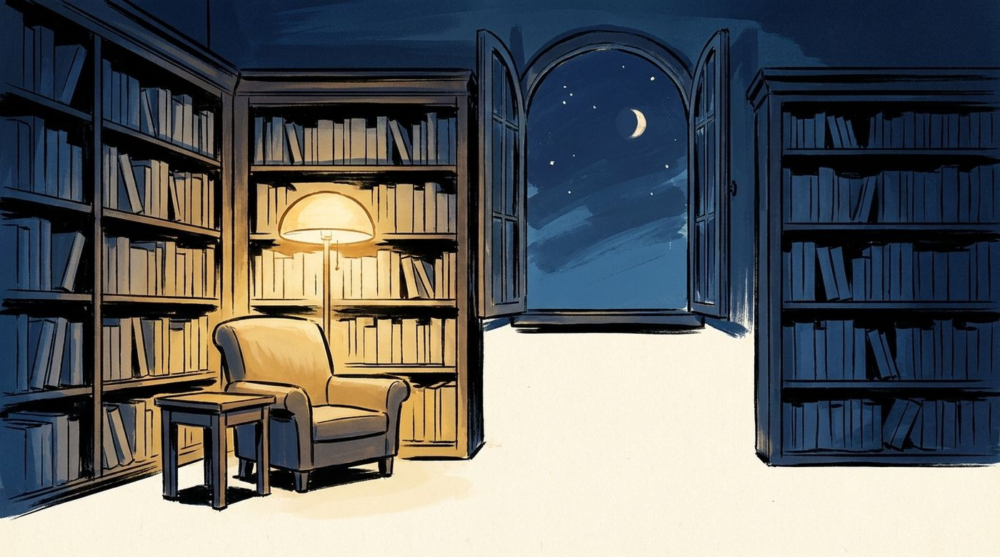
WELCOME TO
The Great Library
Bizzing Bee · Lines Worth Keeping1
Lines Worth KeepingHow this book works
Learn one by heart.
Knowing a poem by heart is not showing off. It is the only way to own one — to have it at three in the morning when there is no book. Every piece in here is short enough to learn in a week.
1
Read it out loud, once
Poetry is a sound before it is a meaning. You will hear the shape before you can explain it.
2
Find the turn
Nearly every piece here changes direction somewhere. The note under it tells you where — but look first.
3
Take the words
The hard words in each piece are listed after it, with how to say them. That is the spelling half of this book.
4
Copy one out by hand
Slowly, with the punctuation exactly as it is. You will notice things reading cannot show you.
Bizzing Bee · Lines Worth Keeping2
Part I of 7
Six speeches everybody half-knows
These are the passages that get quoted at half length and misquoted at full length. Here they are entire, so you can hear where the sentence actually turns — and Shakespeare’s sentences always turn.
Not a speech about suicide so much as a speech about not knowing. Every line adds a clause and refuses to finish the thought; the colons and dashes are the sound of a man arguing with himself and losing. Read it slowly and you will hear that it never once says "I".
outrageous/ owt-RAY-juhss /shockingly bad or excessive
consummation/ kon-suh-MAY-shuhn /a completion or perfect finish
devoutly/ dih-VOWT-lee /earnestly and sincerely, as in prayer
perchance/ per-CHANSS /by chance; perhaps
calamity/ kuh-LAM-ih-tee /a disaster causing great distress
Shylock builds the whole speech out of questions, and every question is one nobody can answer no to. That is the trap: by the time he reaches revenge you have already agreed to the eight steps before it. Notice it is prose, not verse — Shakespeare drops the metre when a character is arguing rather than feeling.
I am a Jew. Hath not a Jew eyes? Hath not a Jew hands, organs,
dimensions, senses, affections, passions; fed with the same food,
hurt with the same weapons, subject to the same diseases, healed by
the same means, warmed and cooled by the same winter and summer as
a Christian is? If you prick us, do we not bleed? If you tickle us,
do we not laugh? If you poison us, do we not die? And if you wrong
us, shall we not revenge? If we are like you in the rest, we will
resemble you in that.
dimensions/ dih-MEN-shuhnz /measurable extents such as height and width
affections/ uh-FEK-shuhnz /feelings of fondness or emotion
resemble/ rih-ZEM-buhl /to look or be like something else
revenge/ rih-VENJ /harm done in return for a wrong suffered
The answer to the speech above, and the two are usually taught apart, which ruins both. "Strain’d" here means forced or squeezed out — mercy cannot be demanded, only given. Listen to how the argument climbs: rain, then a crown, then a sceptre, then God.
sceptre/ SEP-ter /an ornamented rod carried as a symbol of royal power
temporal/ TEM-per-uhl /to do with worldly rather than spiritual affairs
attribute/ AT-rih-byoot /a quality regarded as belonging to someone
majesty/ MAJ-uh-stee /impressive dignity or grandeur, especially of a monarch
enthroned/ en-THROHND /placed on a throne; given a position of honour
Three tomorrows in a row, and the line drags because of them — the rhythm is doing the exhaustion for him. Then the images shorten: candle, shadow, player, tale. He is running out of things to compare life to, and the last word is "nothing".
Tomorrow, and tomorrow, and tomorrow,
Creeps in this petty pace from day to day,
To the last syllable of recorded time;
And all our yesterdays have lighted fools
The way to dusty death. Out, out, brief candle!
Life’s but a walking shadow, a poor player,
That struts and frets his hour upon the stage,
And then is heard no more. It is a tale
Told by an idiot, full of sound and fury,
Signifying nothing.
syllable/ SIL-uh-buhl /a unit of pronunciation with one vowel sound
signifying/ SIG-nih-fye-ing /being a sign of; meaning
The famous opening of a much longer catalogue — seven ages, and the speech walks all the way to "second childishness and mere oblivion". It is funny before it is sad, which is why the sadness lands.
satchel/ SATCH-uhl /a bag with a shoulder strap, used for carrying books
oblivion/ uh-BLIV-ee-uhn /the state of being forgotten
entrances/ EN-truhn-sez /acts of coming onto a stage
Very likely the last thing Shakespeare wrote about his own theatre — "the great globe itself" is both the world and the playhouse he worked in. "Into thin air" begins here. So does "such stuff as dreams are made on", which almost everyone quotes as "made of".
Our revels now are ended. These our actors,
As I foretold you, were all spirits and
Are melted into air, into thin air:
And, like the baseless fabric of this vision,
The cloud-capp’d towers, the gorgeous palaces,
The solemn temples, the great globe itself,
Yea, all which it inherit, shall dissolve
And, like this insubstantial pageant faded,
Leave not a rack behind. We are such stuff
As dreams are made on, and our little life
Is rounded with a sleep.
insubstantial/ in-suhb-STAN-shuhl /lacking solidity or reality
pageant/ PAJ-uhnt /an elaborate public spectacle or procession
Grim-visaged war hath smooth’d his wrinkled front;
And now, instead of mounting barbed steeds
To fright the souls of fearful adversaries,
He capers nimbly in a lady’s chamber
To the lascivious pleasing of a lute.
What to listen for
Almost everyone quotes the first line as though it means "times are bad". It means the opposite: the winter is OVER — you have to reach "made glorious summer" to get the sentence. "This sun of York" is a pun on son, and the man saying it is telling you, in the sunniest weather of his life, that he intends to ruin everything.
discontent/ diss-kuhn-TENT /dissatisfaction with one’s circumstances
victorious/ vik-TOR-ee-uhss /having won a victory
monuments/ MON-yoo-muhnts /structures raised to keep a memory alive
adversaries/ AD-ver-sair-eez /opponents in a contest or conflict
nimbly/ NIM-blee /quickly and lightly on one’s feet
A king talking soldiers into a hole in a wall. Notice that he spends two lines praising calm before he asks for none of it — the speech admits that what it wants is unnatural, then tells them exactly which muscles to use anyway.
Once more unto the breach, dear friends, once more;
Or close the wall up with our English dead.
In peace there’s nothing so becomes a man
As modest stillness and humility:
But when the blast of war blows in our ears,
Then imitate the action of the tiger;
Stiffen the sinews, summon up the blood,
Disguise fair nature with hard-favour’d rage;
Then lend the eye a terrible aspect;
Let it pry through the portage of the head
Like the brass cannon; let the brow o’erwhelm it
As fearfully as doth a galled rock
O’erhang and jutty his confounded base,
Swill’d with the wild and wasteful ocean.
breach/ BREECH /a gap broken through a wall or defence
humility/ hyoo-MIL-ih-tee /a modest view of one’s own importance
sinews/ SIN-yooz /tendons; the tough cords that join muscle to bone
aspect/ ASS-pekt /the look or appearance of something
confounded/ kuhn-FOWN-did /thrown into confusion; overthrown
Shall think themselves accursed they were not here.
What to listen for
The trick of it is the tense. He is outnumbered five to one and he talks about the battle entirely in the future perfect — what you will have done, what you will tell people, how you will misremember it. By the end the men are not being asked to fight; they are being asked not to miss out.
vigil/ VIJ-il /a period of staying awake, often the night before a feast
neighbours/ NAY-berz /people who live nearby (British spelling)
The most famous piece of sarcasm in English. Antony has been forbidden to blame anyone, so he obeys — and repeats "honourable" until the word turns to acid in the crowd’s mouth. He never once contradicts Brutus. He just says his name too often.
Friends, Romans, countrymen, lend me your ears;
I come to bury Caesar, not to praise him.
The evil that men do lives after them;
The good is oft interred with their bones;
So let it be with Caesar. The noble Brutus
Hath told you Caesar was ambitious:
If it were so, it was a grievous fault,
And grievously hath Caesar answer’d it.
Here, under leave of Brutus and the rest—
For Brutus is an honourable man;
So are they all, all honourable men—
Come I to speak in Caesar’s funeral.
He was my friend, faithful and just to me:
But Brutus says he was ambitious;
And Brutus is an honourable man.
interred/ in-TURD /buried in the earth or a tomb
ambitious/ am-BISH-uhss /having a strong desire for success or power
grievous/ GREE-vuhss /causing grief or great harm; very serious
The handle toward my hand? Come, let me clutch thee.
I have thee not, and yet I see thee still.
Art thou not, fatal vision, sensible
To feeling as to sight? or art thou but
A dagger of the mind, a false creation,
Proceeding from the heat-oppressed brain?
I see thee yet, in form as palpable
As this which now I draw.
Thou marshall’st me the way that I was going;
And such an instrument I was to use.
Mine eyes are made the fools o’ the other senses,
Or else worth all the rest: I see thee still.
What to listen for
A man interrogating his own hallucination like a scientist — is it solid? can I touch it? — and losing the argument. He asks whether the dagger is real four times, and the fourth time he has stopped wanting the answer.
dagger/ DAG-er /a short pointed knife used as a weapon
sensible/ SEN-sih-buhl /able to be perceived by the senses
palpable/ PAL-puh-buhl /able to be touched or felt; unmistakable
marshall’st/ MAR-shuhlst /from marshal — to lead or guide in order
instrument/ IN-struh-muhnt /a tool used for a particular purpose
Set as prose, because it is prose: Hamlet drops into everyday speech to say the largest thing in the play. Five exclamation marks of praise and then one flat question that cancels them all. "Quintessence" meant the fifth element, the pure stuff above the other four — and he attaches it to dust.
What a piece of work is a man! How noble in reason, how
infinite in faculty! In form and moving how express and
admirable! In action how like an angel, in apprehension
how like a god! The beauty of the world! The paragon of
animals! And yet, to me, what is this quintessence of dust?
Man delights not me — no, nor woman neither, though by
your smiling you seem to say so.
faculty/ FAK-uhl-tee /a natural power of the mind or body
admirable/ AD-mer-uh-buhl /deserving respect and approval
apprehension/ ap-rih-HEN-shuhn /understanding; the act of grasping with the mind
paragon/ PAIR-uh-gon /a perfect example of a quality
quintessence/ kwin-TESS-uhnss /the purest, most essential form of something
The winds were love-sick with them; the oars were silver,
Which to the tune of flutes kept stroke, and made
The water which they beat to follow faster,
As amorous of their strokes. For her own person,
It beggar’d all description: she did lie
In her pavilion—cloth-of-gold of tissue—
O’er-picturing that Venus where we see
The fancy outwork nature: on each side her
Stood pretty dimpled boys, like smiling Cupids,
With divers-colour’d fans, whose wind did seem
To glow the delicate cheeks which they did cool.
What to listen for
Enobarbus is a plain-spoken soldier, and this is the one time in the play he cannot be plain. Watch what happens to the verbs: the wind is love-sick, the water chases the oars, the fans warm the cheeks they are cooling. Everything in the scene has fallen for her, including the grammar.
burnished/ BUR-nisht /polished until it shines
amorous/ AM-er-uhss /showing or feeling love
pavilion/ puh-VIL-yuhn /a large decorated tent
divers/ DYE-verz /an old word for various or several
The play apologises to you for existing. It is written in seven-syllable couplets — one beat shorter than the grand line — which is why it trots. "Give me your hands" asks for applause and for forgiveness in the same four words, and the actor cannot tell which he is getting.
If we shadows have offended,
Think but this, and all is mended,
That you have but slumber’d here
While these visions did appear.
And this weak and idle theme,
No more yielding but a dream,
Gentles, do not reprehend:
If you pardon, we will mend.
And, as I am an honest Puck,
If we have unearned luck
Now to ’scape the serpent’s tongue,
We will make amends ere long;
Else the Puck a liar call:
So, good night unto you all.
Give me your hands, if we be friends,
And Robin shall restore amends.
reprehend/ rep-rih-HEND /to reprove or find fault with
amends/ uh-MENDZ /something done to make up for a wrong
slumbered/ SLUM-berd /slept
serpent/ SUR-puhnt /a snake, especially a large one
Prospero was the play’s magician, and this is thought to be Shakespeare’s own farewell to the stage — his last solo-written play. The magic is gone by the time he speaks; all that is left is an old man asking an audience, quite plainly, to clap.
confined/ kuhn-FINED /kept within limits; shut in
deceiver/ dih-SEE-ver /a person who tricks or misleads
enchant/ en-CHANT /to put under a magic spell
indulgence/ in-DUL-junss /a kind, lenient act of forgiveness
Lady Macbeth says all of this asleep, in a dream, scrubbing hands that have been clean for weeks. Notice how the sentences stop finishing themselves — a mind confessing to no one, in a language only guilt speaks fluently.
Out, damned spot! out, I say!—One: two: why,
then, ’tis time to do’t.—Hell is murky!—Fie, my
lord, fie! a soldier, and afeard? What need we
fear who knows it, when none can call our power
to accompt?—Yet who would have thought the old man
to have had so much blood in him.
The Thane of Fife had a wife: where is she now?—
What, will these hands ne’er be clean?—No more o’
that, my lord, no more o’ that: you mar all with
this starting.
Here’s the smell of the blood still: all the
perfumes of Arabia will not sweeten this little
hand. Oh, oh, oh!
Wash your hands, put on your nightgown; look not so
pale.—I tell you yet again, Banquo’s buried; he
cannot come out on’s grave.
To bed, to bed! there’s knocking at the gate: come,
come, come, come, give me your hand. What’s
done cannot be undone.—To bed, to bed, to bed!
murky/ MUR-kee /dark and gloomy; hard to see through
accompt/ uh-KOWNT /an old spelling of account — a reckoning
Till you have drench’d our steeples, drown’d the cocks!
You sulphurous and thought-executing fires,
Vaunt-couriers to oak-cleaving thunderbolts,
Singe my white head! And thou, all-shaking thunder,
Strike flat the thick rotundity o’ the world!
Crack nature’s moulds, all germens spill at once,
That make ingrateful man!
What to listen for
An old king, betrayed by both daughters he trusted, stands on a heath and orders the sky to end the world — and the sky, being weather, obliges without noticing him at all. That gap between what he demands and what actually happens is the whole tragedy in nine lines.
A whole war, kings, horses, France — and Shakespeare had none of it: a bare wooden circle and a few dozen actors. So the Chorus does the only honest thing: it apologises for the stage in advance, and asks the audience to imagine the rest. Theatre’s oldest trick, said out loud.
O for a Muse of fire, that would ascend
The brightest heaven of invention,
A kingdom for a stage, princes to act
And monarchs to behold the swelling scene!
Then should the warlike Harry, like himself,
Assume the port of Mars; and at his heels,
Leash’d in like hounds, should famine, sword and fire
Crouch for employment. But pardon, gentles all,
The flat unraised spirits that hath dared
On this unworthy scaffold to bring forth
So great an object: can this cockpit hold
The vasty fields of France? or may we cram
Within this wooden O the very casques
That did affright the air at Agincourt?
ascend/ uh-SEND /to rise or climb upward
monarchs/ MON-arks /kings or queens; rulers
scaffold/ SKAF-uhld /a raised wooden platform, here meaning the stage
vasty/ VAST-ee /an old poetic form of vast
affright/ uh-FRITE /an old word meaning to frighten
Caesar says this the morning he is warned not to leave his house, and goes anyway. Six lines, and every one of them turns out to be exactly wrong about his own death — which is either the definition of tragic irony or the definition of stubbornness, and Shakespeare seems to think it is both.
Romeo is hiding in a garden talking to a lit window, and the whole speech runs on one idea: Juliet outshines the moon so completely that the moon gets jealous and sick. It is astronomy used as a compliment, and it is the most quoted opening line in the language.
But soft, what light through yonder window breaks?
It is the east, and Juliet is the sun.
Arise, fair sun, and kill the envious moon,
Who is already sick and pale with grief,
That thou her maid art far more fair than she.
Be not her maid, since she is envious;
Her vestal livery is but sick and green,
And none but fools do wear it; cast it off.
It is my lady, O, it is my love!
O, that she knew she were!
yonder/ YON-der /over there; at a distance
envious/ EN-vee-uhss /feeling jealous of someone else
vestal/ VESS-tuhl /chaste, pure — like a vestal virgin
"Wherefore" does not mean "where" — it means "why", and the misreading is nearly universal. Juliet is not asking where Romeo is; she is asking why he had to be born a Montague, the one family name standing between her and the person she has already chosen.
wherefore/ WAIR-for /an old word meaning "why", not "where"
perfection/ per-FEK-shuhn /the state of being flawless or complete
Antony spent the whole play turning the city against Brutus, and here, standing over Brutus’s body, he says the one thing he never said to his face: that of all the men who killed Caesar, Brutus alone believed he was doing right. It is generosity offered a beat too late to matter to the man it is about.
This was the noblest Roman of them all:
All the conspirators, save only he,
Did that they did in envy of great Caesar;
He only, in a general honest thought
And common good to all, made one of them.
His life was gentle, and the elements
So mix’d in him that Nature might stand up
And say to all the world, "This was a man!"
conspirators/ kuhn-SPEER-uh-terz /people who plan something secretly and unlawfully together
elements/ EL-uh-muhnts /the basic parts making up a whole; here, one’s nature
Is life so dear, or peace so sweet, as to be purchased at the price of chains and slavery? Forbid it, Almighty God! I know not what course others may take; but as for me, give me liberty, or give me death!
What to listen for
The last line of a much longer speech, and Henry built the whole address to arrive at exactly this sentence — every argument before it is a road leading here. Delivered to a convention still hoping to avoid a war with Britain; within a month, the war had started anyway.
Delivered six weeks before the Civil War ended and six weeks before Lincoln was killed — a president who had every reason to speak of victory instead spent his second inaugural on tenderness toward the side he had just beaten. It is one sentence, and it never once uses the word "we won".
With malice toward none, with charity for all, with firmness in the right as God gives us to see the right, let us strive on to finish the work we are in, to bind up the nation’s wounds, to care for him who shall have borne the battle and for his widow and his orphan — to do all which may achieve and cherish a just and lasting peace among ourselves, and with all nations.
malice/ MAL-iss /the desire to harm someone; ill will
charity/ CHAIR-ih-tee /generosity and kindness toward others
cherish/ CHAIR-ish /to protect and care for lovingly
That man over there says that women need to be helped into carriages, and lifted over ditches, and to have the best place everywhere. Nobody ever helps me into carriages, or over mud-puddles, or gives me any best place! And ain’t I a woman?
Look at me! Look at my arm! I have ploughed and planted, and gathered into barns, and no man could head me! And ain’t I a woman?
I could work as much and eat as much as a man — when I could get it — and bear the lash as well! And ain’t I a woman? I have borne thirteen children, and seen most all sold off to slavery, and when I cried out with my mother’s grief, none but Jesus heard me! And ain’t I a woman?
What to listen for
Truth was born enslaved and could not read or write; the speech survives only because a woman in the audience wrote down what she remembered years later, in Truth’s own spoken dialect, which is why it reads so differently from the polished speeches around it — it sounds like someone actually talking.
convention/ kuhn-VEN-shuhn /a large formal meeting for a shared purpose
ploughed/ PLOWD /turned over earth with a plough to prepare it for planting (British spelling)
One enormous sentence, built the way a boxing match is built: clause after clause landing blows, "who strives... who errs... who fails... who dares", until the only people left standing outside the ring are the ones who never got in it. The whole passage is an argument for trying and losing over never trying at all.
It is not the critic who counts; not the man who points out how the strong man stumbles, or where the doer of deeds could have done them better. The credit belongs to the man who is actually in the arena, whose face is marred by dust and sweat and blood; who strives valiantly; who errs, who comes short again and again, because there is no effort without error and shortcoming; but who does actually strive to do the deeds; who knows great enthusiasms, the great devotions; who spends himself in a worthy cause; who at the best knows in the end the triumph of high achievement, and who at the worst, if he fails, at least fails while daring greatly, so that his place shall never be with those cold and timid souls who neither know victory nor defeat.
marred/ MARD /damaged or spoiled in appearance
valiantly/ VAL-yuhnt-lee /with courage and determination
devotions/ dih-VOH-shuhnz /strong feelings of loyalty or love
So, first of all, let me assert my firm belief that the only thing we have to fear is fear itself — nameless, unreasoning, unjustified terror which paralyzes needed efforts to convert retreat into advance. In every dark hour of our national life, a leadership of frankness and vigor has met with that understanding and support of the people themselves which is essential to victory.
What to listen for
Delivered at the bottom of the Great Depression, with a quarter of the country out of work and banks failing across the nation. The famous line is really a diagnosis: Roosevelt is saying the economic damage is real, but the fear making people hoard money and stop spending is its own separate problem — and the one a president can actually speak to directly.
unreasoning/ un-REE-zuh-ning /not based on or guided by reason
paralyzes/ PAIR-uh-lyz-iz /makes unable to move or act
vigor/ VIG-er /physical or mental strength and energy
The Nez Perce had marched over 1,000 miles trying to reach safety in Canada and were stopped forty miles short of the border. This was translated and written down by an army officer at the surrender, which means the exact words are uncertain — but the last sentence has been remembered exactly, in every retelling, for a century and a half.
Tell General Howard I know his heart. What he told me before, I have it in my heart. I am tired of fighting. Our chiefs are killed. Looking Glass is dead. Toohoolhoolzote is dead. The old men are all dead. It is the young men who say yes or no. He who led the young men is dead. It is cold, and we have no blankets. The little children are freezing to death. My people, some of them, have run away to the hills, and have no blankets, no food. No one knows where they are — perhaps freezing to death. I want to have time to look for my children, and see how many of them I can find. Maybe I shall find them among the dead. Hear me, my chiefs. I am tired; my heart is sick and sad. From where the sun now stands, I will fight no more forever.
chiefs/ CHEEFS /leaders of a tribe or clan
forever/ for-EV-er /for all future time; endlessly
Bizzing Bee · Lines Worth Keeping31
Lines Worth KeepingIn the margins
Lines from the same hands
Single lines by the poets in this part — the ones that broke off from their poems and went out into the language on their own.
“
The bird a nest, the spider a web, man friendship.
— William Blake
“
Love all, trust a few, do wrong to none.
— William Shakespeare
“
What is green? the grass is green,
With small flowers between.
— Christina Rossetti
“
All the world's a stage, and all the men and women merely players.
— William Shakespeare
“
Ring out the old, ring in the new,
Ring, happy bells, across the snow.
— Alfred, Lord Tennyson
“
No man is an island, entire of itself.
— John Donne
“
My name is Ozymandias, king of kings:
Look on my works, ye Mighty, and despair!
— Percy Bysshe Shelley
Bizzing Bee · Lines Worth Keeping32
Part II of 7
The oldest lines we still say
These are the oldest stories anybody still tells, and not one of them was written in English. What you are reading is a translation — which means a second poet, centuries later, sat down and made the thing again in their own language. Every one here was translated before 1929 by someone who was a real poet in their own right, so the English is worth learning for its own sake: Pope’s couplets, Dryden’s line, FitzGerald’s quatrain. The date on each piece is the TRANSLATION’s date, not the poem’s.
Bizzing Bee · Lines Worth Keeping33
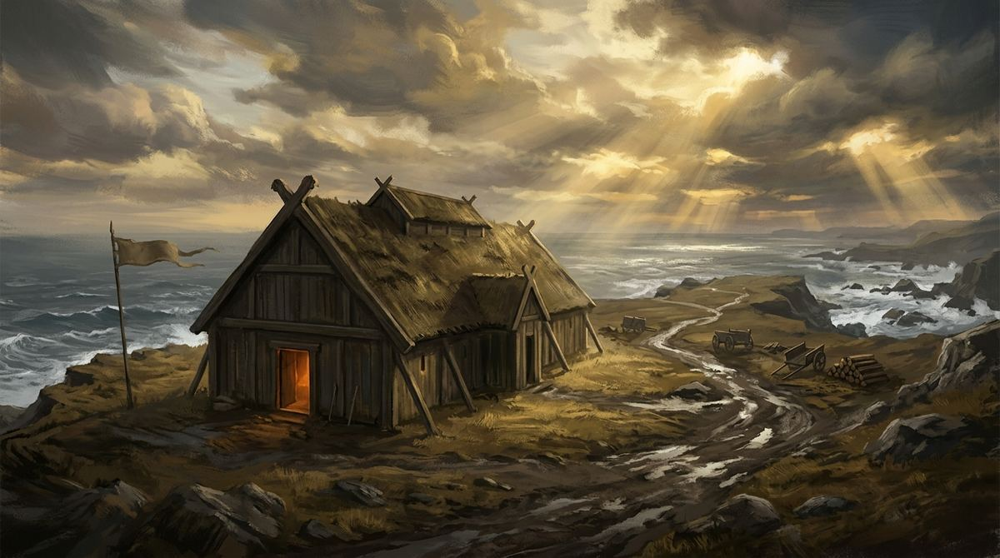
Lines Worth KeepingThe oldest lines we still say
Beowulf, Prologue (Fitt I)
Lo, praise of the prowess of people-kings
Anonymous, translated by Francis Barton Gummere (1855–1919)
Lo, praise of the prowess of people-kings
of spear-armed Danes, in days long sped,
we have heard, and what honor the athelings won!
Oft Scyld the Scefing from squadroned foes,
from many a tribe, the mead-bench tore,
awing the earls. Since erst he lay
friendless, a foundling, fate repaid him:
for he waxed under welkin, in wealth he throve,
till before him the folk, both far and near,
who house by the whale-path, heard his mandate,
gave him gifts: a good king he!
To him an heir was afterward born,
a son in his halls, whom heaven sent
to favor the folk, feeling their woe
that erst they had lacked an earl for leader
so long a while; the Lord endowed him,
the Wielder of Wonder, with world’s renown.
What to listen for
Old English verse does not rhyme; it binds each line together with alliteration — repeated opening sounds — across a pause in the middle called the caesura. Say the fourth line aloud and you can hear the hinge: “Oft Scyld the Scefing / from squadroned foes,” with the s-sounds reaching over the gap. Listen too for the kennings, compound nicknames like “whale-path” for the sea.
prowess/ PROW-iss /great skill or bravery
atheling/ ATH-uh-ling /a prince or noble of royal blood
foundling/ FOWND-ling /a child found abandoned
welkin/ WEL-kin /the sky
renown/ rih-NOWN /widespread fame
Bizzing Bee · Lines Worth Keeping34
Lines Worth KeepingThe oldest lines we still say
The Rubáiyát of Omar Khayyám, quatrains I, XI and LI (first edition)
Awake! for Morning in the Bowl of Night
Omar Khayyám, translated by Edward FitzGerald (1809–1883)
What to listen for
A rubái is a four-line stanza rhymed A-A-B-A: lines one, two and four chime, and the third line is left hanging with no partner. Listen for that unrhymed third line — it lifts away from the pattern, and the fourth line snaps back to close the rhyme, which is why each quatrain lands like a small door shutting.
Awake! for Morning in the Bowl of Night
Has flung the Stone that puts the Stars to Flight:
And Lo! the Hunter of the East has caught
The Sultán’s Turret in a Noose of Light.
Here with a Loaf of Bread beneath the Bough,
A Flask of Wine, a Book of Verse — and Thou
Beside me singing in the Wilderness —
And Wilderness is Paradise enow.
The Moving Finger writes; and, having writ,
Moves on: nor all thy Piety nor Wit
Shall lure it back to cancel half a Line,
Nor all thy Tears wash out a Word of it.
turret/ TUR-it /a small tower on a building
wilderness/ WIL-dur-nis /wild land where nobody lives
paradise/ PAIR-uh-dyce /a place of perfect happiness
piety/ PY-uh-tee /devotion to religion
Bizzing Bee · Lines Worth Keeping35
Lines Worth KeepingThe oldest lines we still say
The Divine Comedy: Inferno, Canto I
Midway upon the journey of our life
Dante Alighieri, translated by Henry Wadsworth Longfellow (1807–1882)
Midway upon the journey of our life
I found myself within a forest dark,
For the straightforward pathway had been lost.
Ah me! how hard a thing it is to say
What was this forest savage, rough, and stern,
Which in the very thought renews the fear.
So bitter is it, death is little more;
But of the good to treat, which there I found,
Speak will I of the other things I saw there.
I cannot well repeat how there I entered,
So full was I of slumber at the moment
In which I had abandoned the true way.
But after I had reached a mountain’s foot,
At that point where the valley terminated,
Which had with consternation pierced my heart,
Upward I looked, and I beheld its shoulders
Vested already with that planet’s rays
Which leadeth others right by every road.
What to listen for
Dante wrote in terza rima, an interlocking rhyme that pulls the reader forward; Longfellow gave up the rhyme in order to keep Dante’s exact word order, so the English sometimes arrives backwards — “Speak will I,” “Upward I looked.” Listen for how the passage climbs: it begins lost and low in the trees and ends with the eye going up a mountain into sunlight.
savage/ SAV-ij /wild and untamed
slumber/ SLUM-bur /sleep
consternation/ kon-stur-NAY-shun /sudden alarm or dismay
vested/ VES-tid /clothed or covered
Bizzing Bee · Lines Worth Keeping36
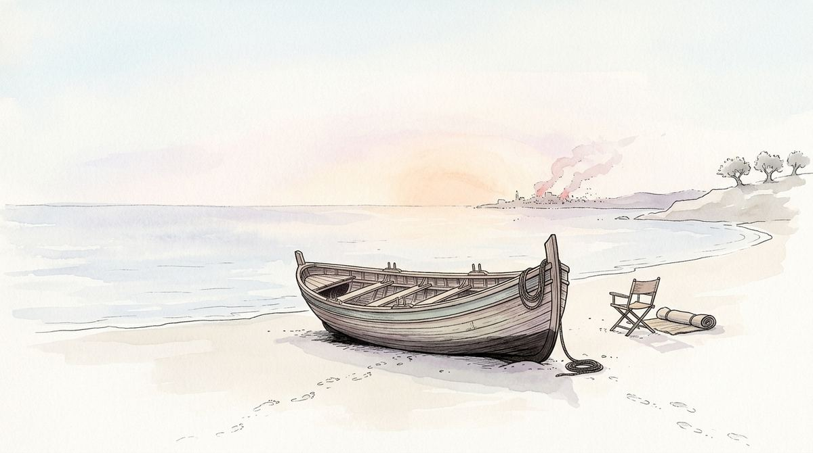
Lines Worth KeepingThe oldest lines we still say
The Aeneid, Book I
Arms, and the man I sing
Virgil, translated by John Dryden (1631–1700)
What to listen for
Virgil’s Latin had no rhyme; Dryden turned it into heroic couplets — pairs of ten-beat lines that click shut on a rhyme, so the story advances two lines at a time. Watch the apostrophes in “forc’d,” “destin’d,” “heav’nly”: they are not decoration but instructions, telling the reader to swallow a syllable so the beat stays at ten.
Arms, and the man I sing, who, forc’d by fate,
And haughty Juno’s unrelenting hate,
Expell’d and exil’d, left the Trojan shore.
Long labors, both by sea and land, he bore,
And in the doubtful war, before he won
The Latian realm, and built the destin’d town;
His banish’d gods restor’d to rites divine,
And settled sure succession in his line,
From whence the race of Alban fathers come,
And the long glories of majestic Rome.
O Muse! the causes and the crimes relate;
What goddess was provok’d, and whence her hate;
For what offense the Queen of Heav’n began
To persecute so brave, so just a man;
Involv’d his anxious life in endless cares,
Expos’d to wants, and hurried into wars!
Can heav’nly minds such high resentment show,
Or exercise their spite in human woe?
haughty/ HAW-tee /proud and scornful
unrelenting/ un-rih-LEN-ting /never easing or giving up
succession/ suk-SESH-un /the order in which rulers follow one another
majestic/ muh-JES-tik /grand and dignified
resentment/ rih-ZENT-munt /bitter anger at unfair treatment
Bizzing Bee · Lines Worth Keeping37
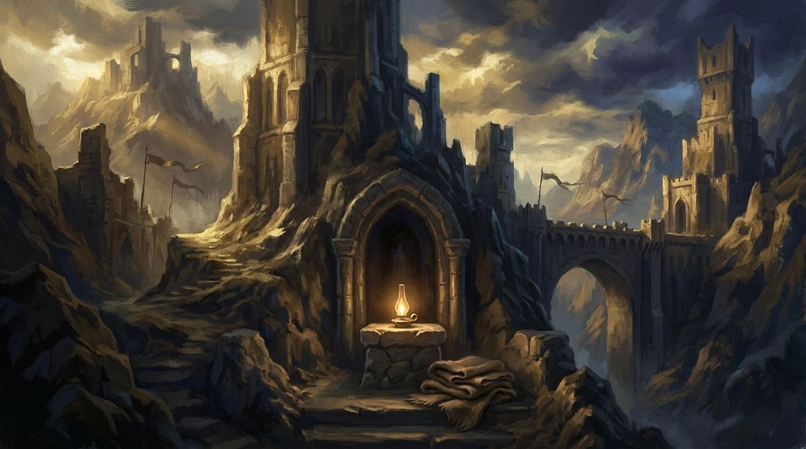
Lines Worth KeepingThe oldest lines we still say
The Song Celestial — Bhagavad Gita, Book II
Never the spirit was born
Vyasa, translated by Sir Edwin Arnold (1832–1904)
Never the spirit was born; the spirit shall cease to be never;
Never was time it was not; End and Beginning are dreams!
Birthless and deathless and changeless remaineth the spirit for ever;
Death hath not touched it at all, dead though the house of it seems!
Nay, but as when one layeth
His worn-out robes away,
And, taking new ones, sayeth,
“These will I wear to-day!”
So putteth by the spirit
Lightly its garb of flesh,
And passeth to inherit
A residence afresh.
I say to thee weapons reach not the Life;
Flame burns it not, waters cannot o’erwhelm,
Nor dry winds wither it. Impenetrable,
Unentered, unassailed, unharmed, untouched,
Immortal, all-arriving, stable, sure,
Invisible, ineffable, by word
And thought uncompassed, ever all itself,
Thus is the Soul declared!
What to listen for
Arnold changes his metre three times in twenty lines, and each shape does a different job. The opening four lines are enormous six-beat rollers that begin with the same word — “Never… Never… ” — so the sentence keeps swinging back like a bell; then he drops to a light, short-lined singing stanza for the picture of changing clothes; then to unrhymed blank verse for the long list of what the soul is not. Listen for that last list, where seven words in a row begin with un- or in-, because the poet is describing something by naming everything it cannot suffer.
impenetrable/ im-PEN-uh-truh-bul /impossible to get into or pass through
unassailed/ un-uh-SAYLD /never attacked
ineffable/ in-EFF-uh-bul /too great to be put into words
immortal/ ih-MOR-tul /living for ever, never dying
Bizzing Bee · Lines Worth Keeping38
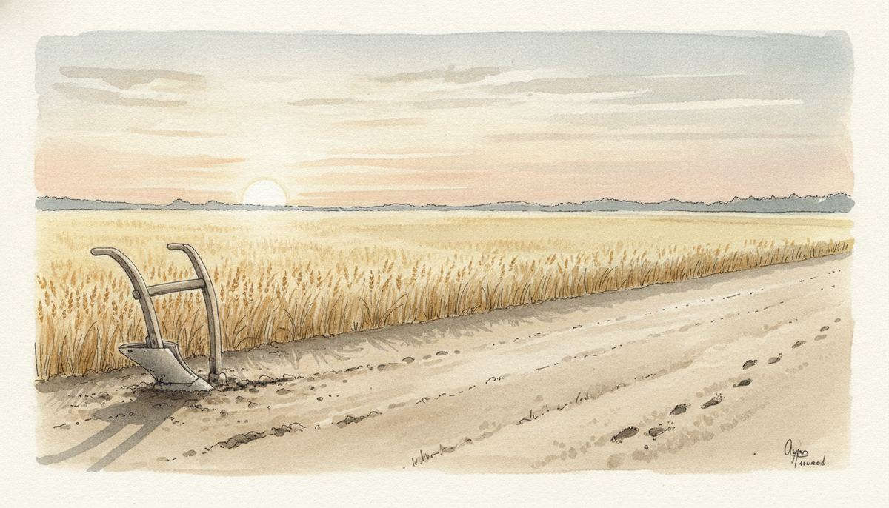
Lines Worth KeepingThe oldest lines we still say
The Song Celestial — Bhagavad Gita, Book III (Virtue in Work)
Do thine allotted task
Vyasa, translated by Sir Edwin Arnold (1832–1904)
What to listen for
Krishna is answering a real question here — Arjuna has asked why he must fight at all if thinking is nobler than doing. Arnold builds the reply as one long argument in blank verse, running the sentences straight over the ends of the lines so the reasoning never comes to rest; then, at the exact middle of a line, it snaps shut into four blunt words: “Do thine allotted task!” Listen for that break, and for the quiet hinge that follows it — the work must be done, but done “free from desire,” without any eye on what it will earn.
Yet these are one! No man shall ’scape from act
By shunning action; nay, and none shall come
By mere renouncements unto perfectness.
Nay, and no jot of time, at any time,
Rests any actionless; his nature’s law
Compels him, even unwilling, into act;
For thought is act in fancy. He who sits
Suppressing all the instruments of flesh,
Yet in his idle heart thinking on them,
Plays the inept and guilty hypocrite:
But he who, with strong body serving mind,
Gives up his mortal powers to worthy work,
Not seeking gain, Arjuna! such an one
Is honourable. Do thine allotted task!
Work is more excellent than idleness;
The body’s life proceeds not, lacking work.
There is a task of holiness to do,
Unlike world-binding toil, which bindeth not
The faithful soul; such earthly duty do
Free from desire, and thou shalt well perform
Thy heavenly purpose.
hypocrite/ HIP-uh-krit /someone who pretends to beliefs they do not hold
inept/ in-EPT /clumsy, having no skill
allotted/ uh-LOT-id /given out as one’s share
suppressing/ suh-PRESS-ing /holding down or shutting off by force
Bizzing Bee · Lines Worth Keeping39
Lines Worth KeepingThe oldest lines we still say
The Rámáyan of Válmíki, Book II, Canto XXVII
Sítá’s Speech
Válmíki, translated by Ralph T. H. Griffith (1826–1906)
Without my lord I would not prize
A home with Gods above the skies:
Without my lord, my life to bless,
Where could be heaven or happiness?
Forbid me not: with thee I go
The tangled wood to tread.
There will I live with thee, as though
This roof were o’er my head.
My will for thine shall be resigned;
Thy feet my steps shall guide.
Thou, only thou, art in my mind:
I heed not all beside.
Thy heart shall ne’er by me be grieved;
Do not my prayer deny:
Take me, dear lord; of thee bereaved
Thy Sítá swears to die.
What to listen for
Ráma has been exiled to the forest for fourteen years and has told Sítá to stay behind in comfort; this is her refusal. Griffith writes the first four lines as four-beat rhyming couplets, then changes shape entirely — the rest alternates a four-beat line with a three-beat one, rhyming abab, which is the metre of English ballads and hymns. Listen for the moment the argument turns into a song, and for the two lines that begin identically, “Without my lord,” pressing the same point twice before she asks.
bereaved/ bih-REEVD /left alone by the loss of a loved one
resigned/ rih-ZYND /given up or handed over
grieved/ GREEVD /made to feel deep sorrow
prize/ PRYZE /to value something very highly
Bizzing Bee · Lines Worth Keeping40
Lines Worth KeepingThe oldest lines we still say
The Mahabharata, Book 3: Vana Parva (the Yaksha’s riddles at the lake)
The Yaksha’s Questions
Vyasa, translated by Kisari Mohan Ganguli (1848–1908)
What to listen for
Yudhishthira’s four brothers lie dead beside a forest lake, and the spirit who guards the water will give them back only if the king can answer. The riddles arrive four at a time, and Ganguli keeps the machinery visible: each answer returns the question’s own words in the same order, swapping in only the missing subject — “doth not close its eyes while asleep” comes back untouched with “a fish” put in front of it. Listen for that echo, because it is how the scene shows you that Yudhishthira is not guessing; he already had the shape of the sentence, and only needed the word.
Yaksha said, ‘What is that which doth not close its eyes while asleep? What is that which doth not move after birth? What is that which is without heart? And what is that which swells with its own impetus?’
Yudhishthira answered, ‘A fish doth not close its eyes while asleep; an egg doth not move after birth; a stone is without heart; and a river swelleth with its own impetus.’
Yaksha said, ‘What is that which, when renounced, maketh one agreeable? What is that which, when renounced, leadeth to no regret? What is that which, when renounced, maketh one wealthy? And what is that which, when renounced, maketh one happy?’
Yudhishthira answered, ‘Pride, if renounced, maketh one agreeable; wrath, if renounced, leadeth to no regret; desire, if renounced, maketh one wealthy; and avarice, if renounced, maketh one happy.’
impetus/ IM-puh-tus /the force that keeps something moving
renounced/ rih-NOWNST /formally given up or let go of
agreeable/ uh-GREE-uh-bul /pleasant to be around
avarice/ AV-uh-riss /extreme greed for wealth
Bizzing Bee · Lines Worth Keeping41
Lines Worth KeepingIn the margins
Lines from the same hands
Single lines by the poets in this part — the ones that broke off from their poems and went out into the language on their own.
“
Bring me all of your dreams, you dreamer, that I may wrap them in a blue cloud-cloth.
— Langston Hughes
“
A people always ends by resembling its shadow.
— Rudyard Kipling
“
Sound the Flute!
Now it's mute.
Birds delight
Day and Night.
— William Blake
“
A thing of beauty is a joy forever.
— John Keats
“
One touch of nature makes the whole world kin.
— William Shakespeare
“
If you can trust yourself when all men doubt you,
But make allowance for their doubting too.
— Rudyard Kipling
“
Heard melodies are sweet, but those unheard
Are sweeter.
— John Keats
Bizzing Bee · Lines Worth Keeping42
Part III of 7
Fourteen lines, and a turn
A sonnet is an argument with a hinge in it. Eight lines set a problem, then something shifts — usually at line nine, in the English form at the final couplet — and the poem answers itself. Find the hinge and you have read the poem.
Bizzing Bee · Lines Worth Keeping43
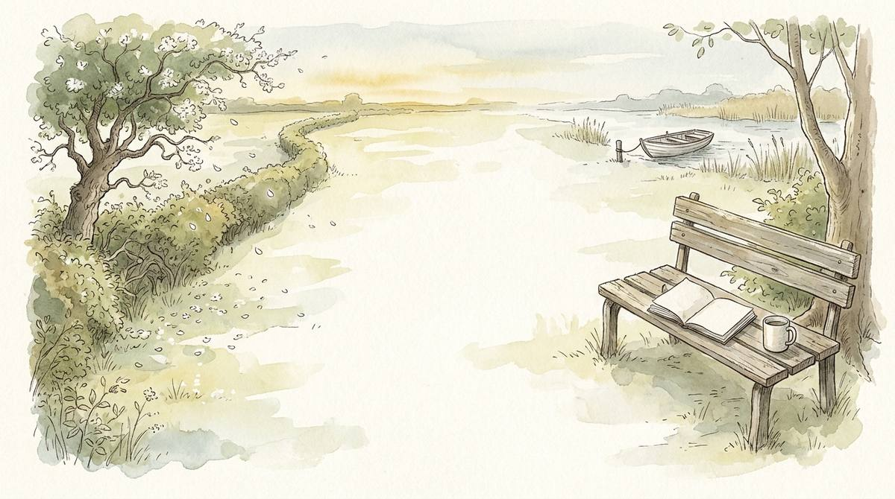
Lines Worth KeepingFourteen lines, and a turn
Sonnets
Sonnet 18: Shall I compare thee to a summer’s day?
William Shakespeare (1564–1616)
Shall I compare thee to a summer’s day?
Thou art more lovely and more temperate:
Rough winds do shake the darling buds of May,
And summer’s lease hath all too short a date;
Sometime too hot the eye of heaven shines,
And often is his gold complexion dimm’d;
And every fair from fair sometime declines,
By chance or nature’s changing course untrimm’d;
But thy eternal summer shall not fade,
Nor lose possession of that fair thou ow’st;
Nor shall death brag thou wander’st in his shade,
When in eternal lines to time thou grow’st:
So long as men can breathe or eyes can see,
So long lives this, and this gives life to thee.
What to listen for
The hinge is "But" at line nine. Everything before it is a list of ways summer fails; everything after is the boast that the poem will not. And it was right — you are reading it four hundred years later.
temperate/ TEM-per-uht /mild; neither very hot nor very cold
complexion/ kuhm-PLEK-shuhn /the natural colour and appearance of the skin
eternal/ ih-TER-nuhl /lasting forever
Bizzing Bee · Lines Worth Keeping44
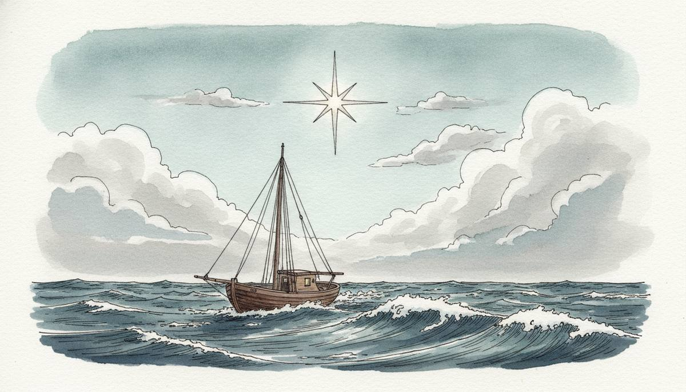
Lines Worth KeepingFourteen lines, and a turn
Sonnets
Sonnet 116: Let me not to the marriage of true minds
William Shakespeare (1564–1616)
What to listen for
A definition written entirely in negatives — not love, not Time’s fool, alters not — until the couplet stakes the poet’s whole career on it. "Bark" is a ship; "his height be taken" is a navigator measuring a star.
Let me not to the marriage of true minds
Admit impediments. Love is not love
Which alters when it alteration finds,
Or bends with the remover to remove:
O no! it is an ever-fixed mark
That looks on tempests and is never shaken;
It is the star to every wandering bark,
Whose worth’s unknown, although his height be taken.
Love’s not Time’s fool, though rosy lips and cheeks
Within his bending sickle’s compass come;
Love alters not with his brief hours and weeks,
But bears it out even to the edge of doom.
If this be error and upon me proved,
I never writ, nor no man ever loved.
impediments/ im-PED-ih-muhnts /obstacles that stand in the way
tempests/ TEM-pists /violent storms
sickle/ SIK-uhl /a curved blade for cutting grain
compass/ KUM-puhss /the range or reach of something
Bizzing Bee · Lines Worth Keeping45
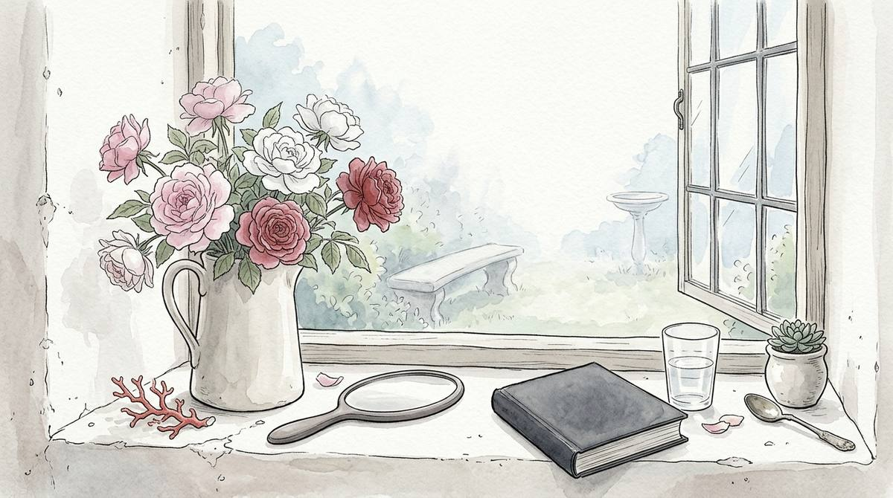
Lines Worth KeepingFourteen lines, and a turn
Sonnets
Sonnet 130: My mistress’ eyes are nothing like the sun
William Shakespeare (1564–1616)
My mistress’ eyes are nothing like the sun;
Coral is far more red than her lips’ red;
If snow be white, why then her breasts are dun;
If hairs be wires, black wires grow on her head.
I have seen roses damask’d, red and white,
But no such roses see I in her cheeks;
And in some perfumes is there more delight
Than in the breath that from my mistress reeks.
I love to hear her speak, yet well I know
That music hath a far more pleasing sound;
I grant I never saw a goddess go;
My mistress, when she walks, treads on the ground:
And yet, by heaven, I think my love as rare
As any she belied with false compare.
What to listen for
A joke at the expense of every other sonnet ever written. Thirteen lines of insults, and then a couplet that turns them all into the compliment: she is real, and the poets comparing women to suns and coral are lying.
coral/ KOR-uhl /a hard red or pink substance formed by sea creatures
damask/ DAM-uhsk /patterned, like the figured silk of Damascus
belied/ bih-LYDE /gave a false impression of
Bizzing Bee · Lines Worth Keeping46
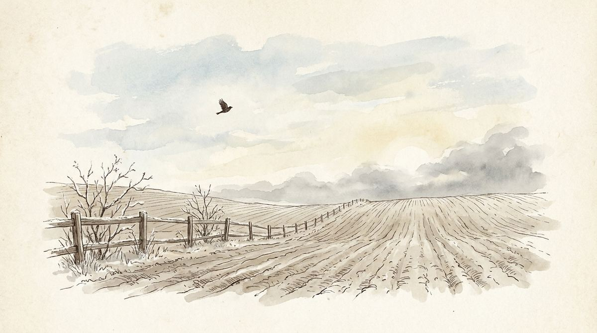
Lines Worth KeepingFourteen lines, and a turn
Sonnets
Sonnet 29: When, in disgrace with fortune and men’s eyes
William Shakespeare (1564–1616)
What to listen for
Eight lines of self-pity so complete it is almost funny, and then one word — "Haply", meaning by chance — turns the whole poem over. The lark image lifts the metre with it: after twelve heavy lines the verse suddenly climbs.
When, in disgrace with fortune and men’s eyes,
I all alone beweep my outcast state,
And trouble deaf heaven with my bootless cries,
And look upon myself and curse my fate,
Wishing me like to one more rich in hope,
Featured like him, like him with friends possess’d,
Desiring this man’s art and that man’s scope,
With what I most enjoy contented least;
Yet in these thoughts myself almost despising,
Haply I think on thee, and then my state,
Like to the lark at break of day arising
From sullen earth, sings hymns at heaven’s gate;
For thy sweet love remember’d such wealth brings
That then I scorn to change my state with kings.
bootless/ BOOT-liss /useless; bringing no result
haply/ HAP-lee /by chance; perhaps
sullen/ SUL-uhn /gloomy and silent; dull in colour
despising/ dih-SPY-zing /regarding with contempt
Bizzing Bee · Lines Worth Keeping47
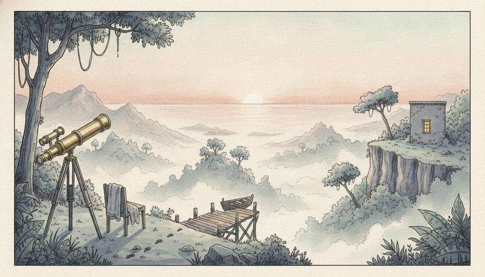
Lines Worth KeepingFourteen lines, and a turn
The Examiner
On First Looking into Chapman’s Homer
John Keats (1795–1821)
Much have I travell’d in the realms of gold,
And many goodly states and kingdoms seen;
Round many western islands have I been
Which bards in fealty to Apollo hold.
Oft of one wide expanse had I been told
That deep-brow’d Homer ruled as his demesne;
Yet did I never breathe its pure serene
Till I heard Chapman speak out loud and bold:
Then felt I like some watcher of the skies
When a new planet swims into his ken;
Or like stout Cortez when with eagle eyes
He star’d at the Pacific—and all his men
Look’d at each other with a wild surmise—
Silent, upon a peak in Darien.
What to listen for
A poem about reading a translation, which sounds dull and is not: it is about the moment a book cracks the world open. Keats got his explorer wrong — it was Balboa, not Cortez — and nobody has ever wanted the line changed.
fealty/ FEE-uhl-tee /loyalty sworn to a lord
demesne/ dih-MAYN /land attached to a manor; a domain
surmise/ ser-MYZE /a guess made without firm evidence
expanse/ ik-SPANSS /a wide continuous area
Bizzing Bee · Lines Worth Keeping48
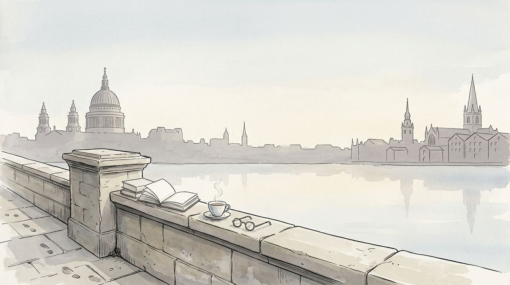
Lines Worth KeepingFourteen lines, and a turn
Poems, in Two Volumes
Composed upon Westminster Bridge
William Wordsworth (1770–1850)
What to listen for
The great poet of lakes and mountains, undone by London at dawn. "Smokeless" is the key: he is seeing the city in the one hour before the fires are lit, and it will not look like this again all day.
Earth has not any thing to shew more fair:
Dull would he be of soul who could pass by
A sight so touching in its majesty:
This City now doth like a garment wear
The beauty of the morning; silent, bare,
Ships, towers, domes, theatres, and temples lie
Open unto the fields, and to the sky;
All bright and glittering in the smokeless air.
Never did sun more beautifully steep
In his first splendour valley, rock, or hill;
Ne’er saw I, never felt, a calm so deep!
The river glideth at his own sweet will:
Dear God! the very houses seem asleep;
And all that mighty heart is lying still!
majesty/ MAJ-uh-stee /impressive dignity or grandeur
splendour/ SPLEN-der /magnificent and brilliant appearance
glideth/ GLYE-duhth /moves smoothly and quietly (old form of glides)
Bizzing Bee · Lines Worth Keeping49
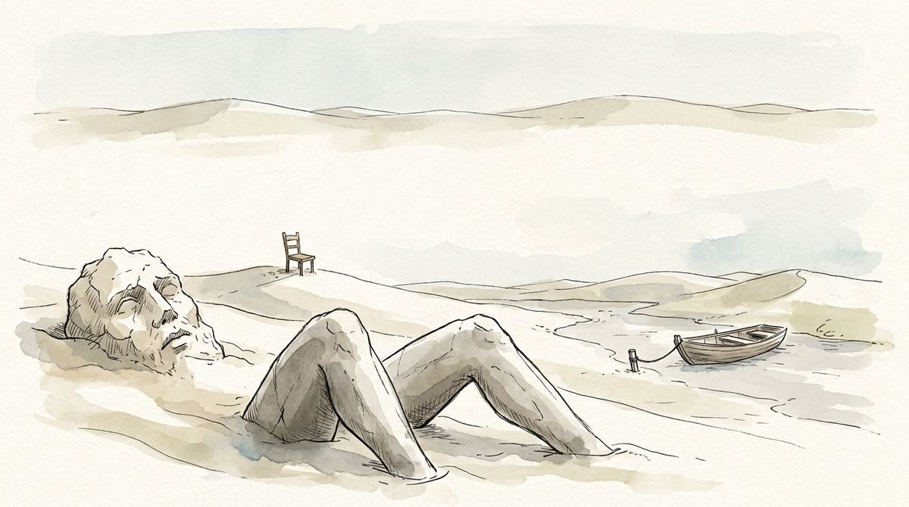
Lines Worth KeepingFourteen lines, and a turn
The Examiner
Ozymandias
Percy Bysshe Shelley (1792–1822)
I met a traveller from an antique land,
Who said—"Two vast and trunkless legs of stone
Stand in the desert. . . . Near them, on the sand,
Half sunk a shattered visage lies, whose frown,
And wrinkled lip, and sneer of cold command,
Tell that its sculptor well those passions read
Which yet survive, stamped on these lifeless things,
The hand that mocked them, and the heart that fed;
And on the pedestal, these words appear:
My name is Ozymandias, King of Kings;
Look on my Works, ye Mighty, and despair!
Nothing beside remains. Round the decay
Of that colossal Wreck, boundless and bare
The lone and level sands stretch far away."
What to listen for
Four voices in fourteen lines: Shelley, the traveller, the sculptor and the dead king — and the king, who wanted the last word, is the one quoted inside two other people’s speech. "Nothing beside remains" is the shortest sentence in the poem and it lands like a door closing.
visage/ VIZ-ij /a person’s face or facial expression
pedestal/ PED-uh-stuhl /the base on which a statue stands
colossal/ kuh-LOSS-uhl /extremely large
antique/ an-TEEK /belonging to ancient times
Bizzing Bee · Lines Worth Keeping50
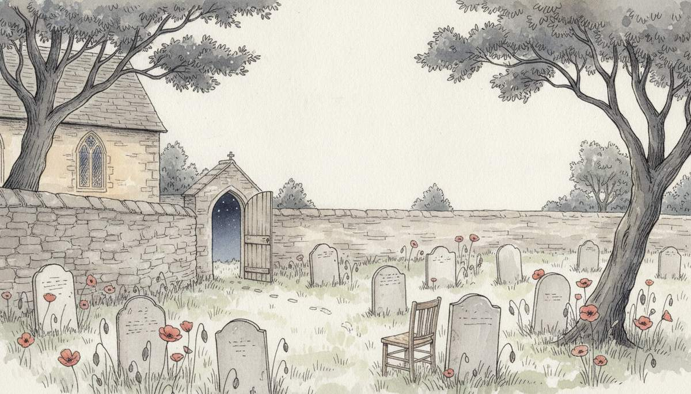
Lines Worth KeepingFourteen lines, and a turn
Holy Sonnets
Death, be not proud (Holy Sonnet 10)
John Donne (1572–1631)
What to listen for
Donne argues with Death the way a lawyer argues with a witness — calls it "poor Death", calls it a slave, points out that opium works better. The last four words are one of the great endings in English.
Death, be not proud, though some have called thee
Mighty and dreadful, for thou art not so;
For those whom thou think’st thou dost overthrow
Die not, poor Death, nor yet canst thou kill me.
From rest and sleep, which but thy pictures be,
Much pleasure; then from thee much more must flow,
And soonest our best men with thee do go,
Rest of their bones, and soul’s delivery.
Thou art slave to fate, chance, kings, and desperate men,
And dost with poison, war, and sickness dwell,
And poppy or charms can make us sleep as well
And better than thy stroke; why swell’st thou then?
One short sleep past, we wake eternally,
And death shall be no more; Death, thou shalt die.
dreadful/ DRED-fuhl /causing great fear or awe
desperate/ DES-per-uht /reckless from despair
eternally/ ih-TER-nuh-lee /forever; without end
Bizzing Bee · Lines Worth Keeping51
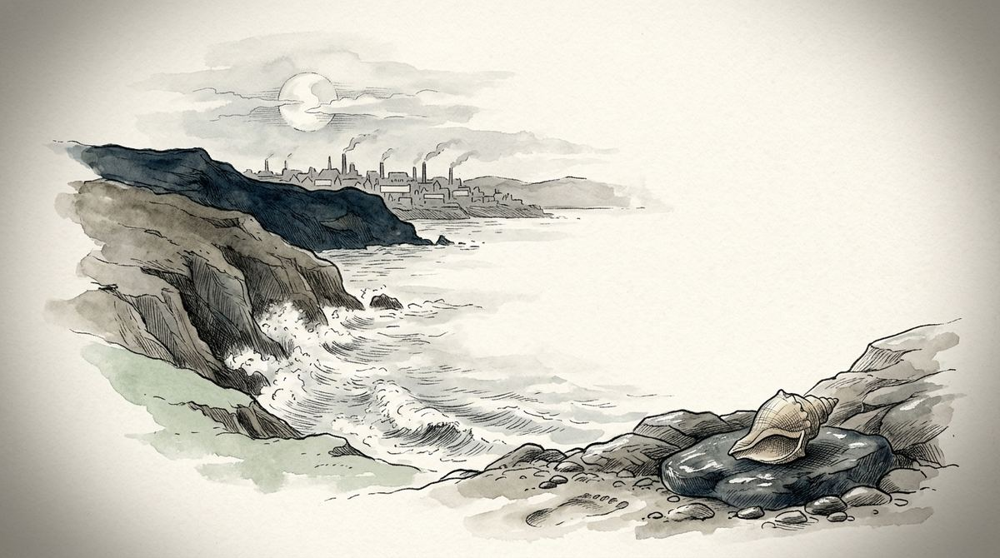
Lines Worth KeepingFourteen lines, and a turn
Poems, in Two Volumes
The world is too much with us
William Wordsworth (1770–1850)
The world is too much with us; late and soon,
Getting and spending, we lay waste our powers;—
Little we see in Nature that is ours;
We have given our hearts away, a sordid boon!
This Sea that bares her bosom to the moon;
The winds that will be howling at all hours,
And are up-gathered now like sleeping flowers;
For this, for everything, we are out of tune;
It moves us not.—Great God! I’d rather be
A Pagan suckled in a creed outworn;
So might I, standing on this pleasant lea,
Have glimpses that would make me less forlorn;
Have sight of Proteus rising from the sea;
Or hear old Triton blow his wreathed horn.
What to listen for
Written two hundred years before anyone had a phone, and it is still the best complaint about being too busy to look up. "A sordid boon" — a filthy gift — is the sharpest three words in it.
sordid/ SOR-did /dirty, squalid or morally low
boon/ BOON /a thing that is helpful; a blessing
forlorn/ fer-LORN /lonely and unhappy
wreathed/ REETHD /twisted or coiled into a ring
Bizzing Bee · Lines Worth Keeping52
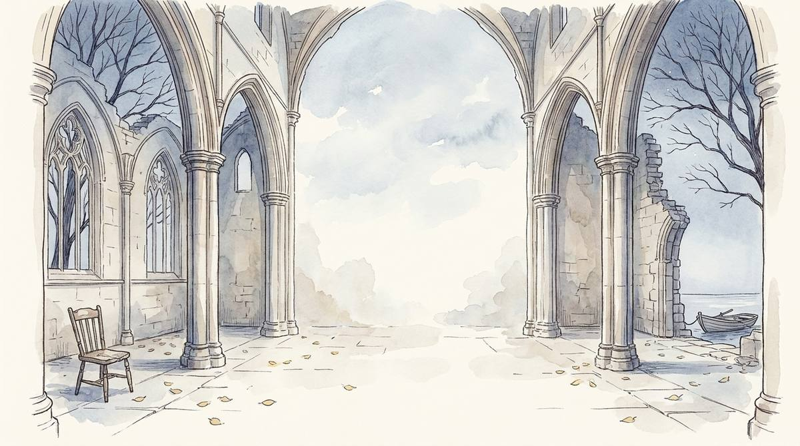
Lines Worth KeepingFourteen lines, and a turn
Sonnets
Sonnet 73: That time of year thou mayst in me behold
William Shakespeare (1564–1616)
What to listen for
Three images, each one shorter-lived than the last: a year, a day, a fire. Watch the first quatrain hesitate — "yellow leaves, or none, or few" — a man correcting himself downward, in public, about how much of himself is left.
That time of year thou mayst in me behold
When yellow leaves, or none, or few, do hang
Upon those boughs which shake against the cold,
Bare ruin’d choirs, where late the sweet birds sang.
In me thou see’st the twilight of such day
As after sunset fadeth in the west,
Which by and by black night doth take away,
Death’s second self, that seals up all in rest.
In me thou see’st the glowing of such fire
That on the ashes of his youth doth lie,
As the death-bed whereon it must expire,
Consum’d with that which it was nourish’d by.
This thou perceiv’st, which makes thy love more strong,
To love that well which thou must leave ere long.
boughs/ BOWZ /the main branches of a tree
choirs/ KWIRE-z /the parts of a church where singers sit
expire/ ek-SPYRE /to come to an end; to die
nourished/ NUR-isht /fed and kept alive
perceive/ per-SEEV /to become aware of; to understand
Bizzing Bee · Lines Worth Keeping53
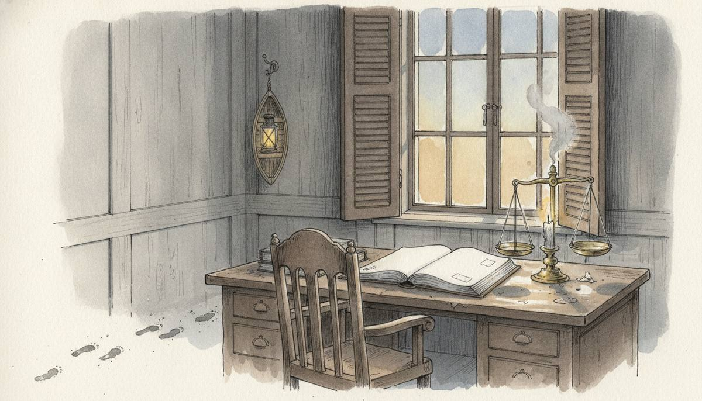
Lines Worth KeepingFourteen lines, and a turn
Sonnets
Sonnet 30: When to the sessions of sweet silent thought
William Shakespeare (1564–1616)
When to the sessions of sweet silent thought
I summon up remembrance of things past,
I sigh the lack of many a thing I sought,
And with old woes new wail my dear time’s waste:
Then can I drown an eye, unus’d to flow,
For precious friends hid in death’s dateless night,
And weep afresh love’s long since cancell’d woe,
And moan the expense of many a vanish’d sight:
Then can I grieve at grievances foregone,
And heavily from woe to woe tell o’er
The sad account of fore-bemoaned moan,
Which I new pay as if not paid before.
But if the while I think on thee, dear friend,
All losses are restor’d and sorrows end.
What to listen for
The whole poem is a lawsuit. "Sessions", "summon", "account", "expense", "cancell’d", "pay", "losses restor’d" — grief is being audited. Then the couplet closes the books in one line, which is either a comfort or a very quick change of subject.
remembrance/ rih-MEM-bruhnss /the act of remembering; a memory kept
grievances/ GREE-vuhn-siz /causes of complaint or resentment
foregone/ FOR-gawn /gone before; past and done with
precious/ PRESH-uhss /of great value; greatly loved
Bizzing Bee · Lines Worth Keeping54
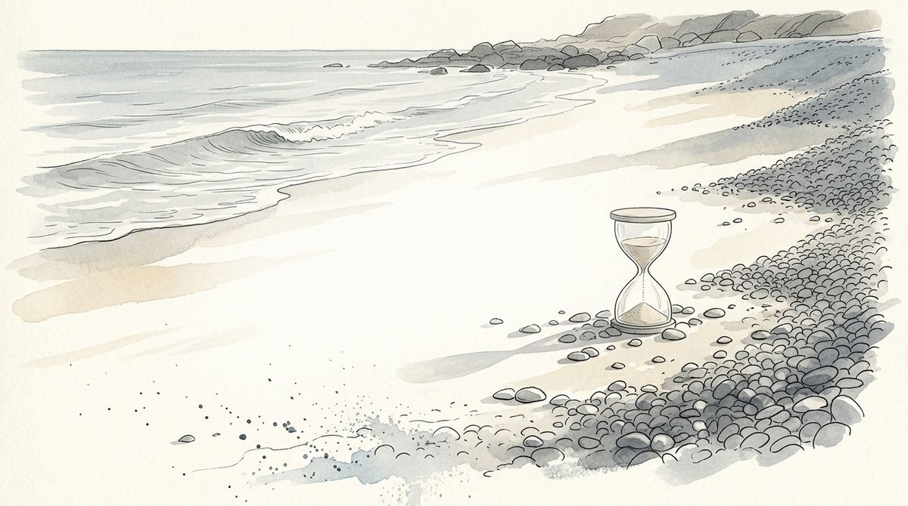
Lines Worth KeepingFourteen lines, and a turn
Sonnets
Sonnet 60: Like as the waves make towards the pebbled shore
William Shakespeare (1564–1616)
What to listen for
A whole life in four lines — born, crowned, eclipsed, taken back — and then Time gets teeth: it transfixes, it delves, it feeds, it mows. The poem loses the argument on purpose and then claims the last word anyway.
Like as the waves make towards the pebbled shore,
So do our minutes hasten to their end;
Each changing place with that which goes before,
In sequent toil all forwards do contend.
Nativity, once in the main of light,
Crawls to maturity, wherewith being crown’d,
Crooked eclipses ’gainst his glory fight,
And Time that gave doth now his gift confound.
Time doth transfix the flourish set on youth
And delves the parallels in beauty’s brow,
Feeds on the rarities of nature’s truth,
And nothing stands but for his scythe to mow:
And yet to times in hope my verse shall stand,
Praising thy worth, despite his cruel hand.
nativity/ nuh-TIV-ih-tee /the occasion of a person’s birth
maturity/ muh-TYOOR-ih-tee /the state of being fully grown
eclipses/ ih-KLIP-siz /obscurings of one heavenly body by another
transfix/ tranz-FIKS /to pierce through; to hold motionless
scythe/ SYTHE /a long curved blade for mowing by hand
Bizzing Bee · Lines Worth Keeping55
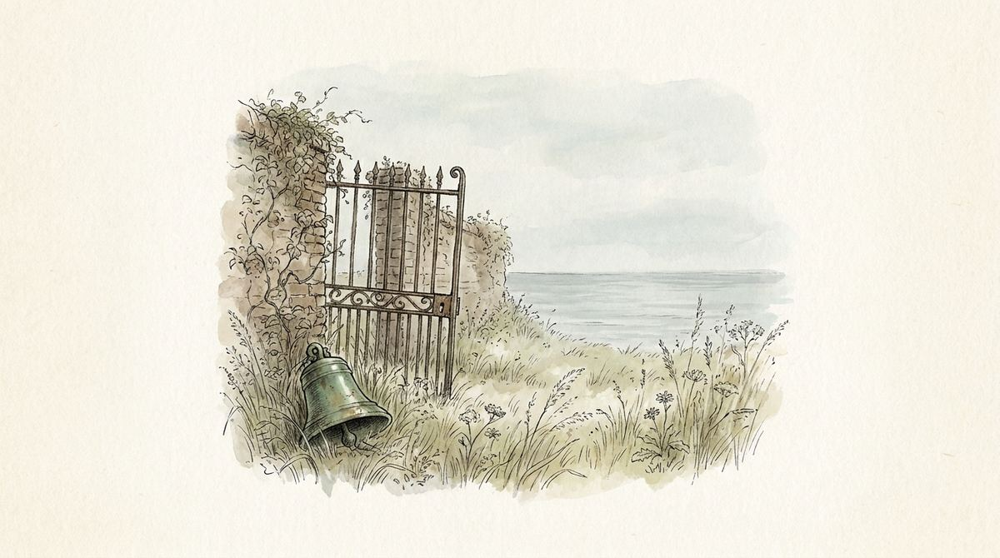
Lines Worth KeepingFourteen lines, and a turn
Sonnets
Sonnet 65: Since brass, nor stone, nor earth, nor boundless sea
William Shakespeare (1564–1616)
Since brass, nor stone, nor earth, nor boundless sea,
But sad mortality o’ersways their power,
How with this rage shall beauty hold a plea,
Whose action is no stronger than a flower?
O, how shall summer’s honey breath hold out
Against the wrackful siege of battering days,
When rocks impregnable are not so stout,
Nor gates of steel so strong, but Time decays?
O fearful meditation! where, alack,
Shall Time’s best jewel from Time’s chest lie hid?
Or what strong hand can hold his swift foot back?
Or who his spoil of beauty can forbid?
O, none, unless this miracle have might,
That in black ink my love may still shine bright.
What to listen for
Four hard things in the first line and every one of them loses. The poem asks six questions and answers none of them until "O, none" — and then stakes everything on the cheapest material in the list: ink.
mortality/ mor-TAL-ih-tee /the state of being subject to death
impregnable/ im-PREG-nuh-buhl /unable to be captured or broken into
meditation/ med-ih-TAY-shuhn /deep, focused thought
Milton went blind in his forties. The whole octave is one enormous sentence that cannot finish — the sound of a question being worked up to and dreaded. Then Patience interrupts him mid-line, which is the only rude thing in the poem and the kindest.
When I consider how my light is spent
Ere half my days in this dark world and wide,
And that one talent which is death to hide
Lodg’d with me useless, though my soul more bent
To serve therewith my Maker, and present
My true account, lest He returning chide,
"Doth God exact day-labour, light denied?"
I fondly ask. But Patience, to prevent
That murmur, soon replies: "God doth not need
Either man’s work or his own gifts: who best
Bear his mild yoke, they serve him best. His state
Is kingly; thousands at his bidding speed
And post o’er land and ocean without rest:
They also serve who only stand and wait."
lodged/ LOJD /placed or left somewhere for keeping
chide/ CHIDE /to scold or rebuke
murmur/ MUR-mer /a low complaint spoken under the breath
yoke/ YOKE /a wooden crosspiece harnessing two animals; a burden
bidding/ BID-ing /a command or request
Bizzing Bee · Lines Worth Keeping57
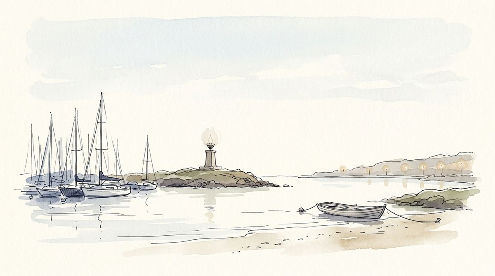
Lines Worth KeepingFourteen lines, and a turn
Written for the pedestal of the Statue of Liberty
The New Colossus
Emma Lazarus (1849–1887)
Not like the brazen giant of Greek fame,
With conquering limbs astride from land to land;
Here at our sea-washed, sunset gates shall stand
A mighty woman with a torch, whose flame
Is the imprisoned lightning, and her name
Mother of Exiles. From her beacon-hand
Glows world-wide welcome; her mild eyes command
The air-bridged harbor that twin cities frame.
"Keep, ancient lands, your storied pomp!" cries she
With silent lips. "Give me your tired, your poor,
Your huddled masses yearning to breathe free,
The wretched refuse of your teeming shore.
Send these, the homeless, tempest-tost to me,
I lift my lamp beside the golden door!"
What to listen for
It begins by refusing the obvious comparison — not that colossus, this one — and the difference is the whole poem: the old giant straddled a harbour to keep ships out. Note "refuse": here it is REF-yooss, rubbish, not rih-FYOOZ. A heteronym doing the hardest work in the line.
brazen/ BRAY-zuhn /made of brass; boldly shameless
astride/ uh-STRIDE /with a leg on either side
beacon/ BEE-kuhn /a fire or light used as a signal
refuse/ REF-yooss /matter thrown away; rubbish
tempest/ TEM-pist /a violent storm
Bizzing Bee · Lines Worth Keeping58
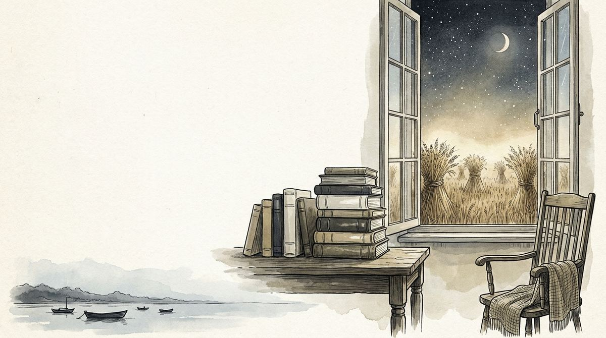
Lines Worth KeepingFourteen lines, and a turn
Written in a letter to J. H. Reynolds
When I have Fears that I May Cease to Be
John Keats (1795–1821)
What to listen for
Keats was twenty-two and already knew. Three "when"s pile up for twelve lines without a main clause — the sentence will not land — and when it finally does, everything in it goes small: one man, one shore, two words sinking.
When I have fears that I may cease to be
Before my pen has glean’d my teeming brain,
Before high-piled books, in charact’ry,
Hold like rich garners the full ripen’d grain;
When I behold, upon the night’s starr’d face,
Huge cloudy symbols of a high romance,
And think that I may never live to trace
Their shadows, with the magic hand of chance;
And when I feel, fair creature of an hour,
That I shall never look upon thee more,
Never have relish in the faery power
Of unreflecting love;—then on the shore
Of the wide world I stand alone, and think
Till love and fame to nothingness do sink.
gleaned/ GLEEND /gathered bit by bit, as grain left after harvest
teeming/ TEEM-ing /full to overflowing; swarming
garners/ GAR-nerz /storehouses for grain
relish/ REL-ish /great enjoyment of something
Bizzing Bee · Lines Worth Keeping59
Lines Worth KeepingFourteen lines, and a turn
Written in a volume of Shakespeare
Bright star, would I were stedfast as thou art
John Keats (1795–1821)
Bright star, would I were stedfast as thou art—
Not in lone splendour hung aloft the night
And watching, with eternal lids apart,
Like nature’s patient, sleepless Eremite,
The moving waters at their priestlike task
Of pure ablution round earth’s human shores,
Or gazing on the new soft-fallen mask
Of snow upon the mountains and the moors—
No—yet still stedfast, still unchangeable,
Pillow’d upon my fair love’s ripening breast,
To feel for ever its soft fall and swell,
Awake for ever in a sweet unrest,
Still, still to hear her tender-taken breath,
And so live ever—or else swoon to death.
What to listen for
He asks for one quality of the star and spends eight lines refusing all its others. "Stedfast" is Keats’s own spelling — it was already old-fashioned when he wrote it, and he wanted the older, harder word. The poem ends on a choice between two things that are both an ending.
stedfast/ STED-fast /an older spelling of steadfast — firmly fixed
eremite/ AIR-uh-mite /a hermit, especially a religious one
ablution/ uh-BLOO-shuhn /a ceremonial washing
unchangeable/ un-CHAYN-juh-buhl /not able to be altered
Bizzing Bee · Lines Worth Keeping60
Lines Worth KeepingFourteen lines, and a turn
Poems
God’s Grandeur
Gerard Manley Hopkins (1844–1889)
What to listen for
Read it aloud or you will miss it entirely. Hopkins hammers the same sounds until they wear out — "have trod, have trod, have trod", "seared, bleared, smeared" — so the language itself gets tired and grubby, and then the last three lines let the air back in.
The world is charged with the grandeur of God.
It will flame out, like shining from shook foil;
It gathers to a greatness, like the ooze of oil
Crushed. Why do men then now not reck his rod?
Generations have trod, have trod, have trod;
And all is seared with trade; bleared, smeared with toil;
And wears man’s smudge and shares man’s smell: the soil
Is bare now, nor can foot feel, being shod.
And for all this, nature is never spent;
There lives the dearest freshness deep down things;
And though the last lights off the black West went
Oh, morning, at the brown brink eastward, springs—
Because the Holy Ghost over the bent
World broods with warm breast and with ah! bright wings.
grandeur/ GRAN-jer /splendour and impressiveness
seared/ SEERD /burned or scorched on the surface
bleared/ BLEERD /made dim or blurred
smudge/ SMUJ /a dirty mark or smear
shod/ SHOD /wearing shoes
Bizzing Bee · Lines Worth Keeping61
Lines Worth KeepingFourteen lines, and a turn
Poems, in Two Volumes
It is a beauteous evening, calm and free
William Wordsworth (1770–1850)
It is a beauteous evening, calm and free,
The holy time is quiet as a Nun
Breathless with adoration; the broad sun
Is sinking down in its tranquillity;
The gentleness of heaven broods o’er the Sea:
Listen! the mighty Being is awake,
And doth with his eternal motion make
A sound like thunder—everlastingly.
Dear Child! dear Girl! that walkest with me here,
If thou appear untouched by solemn thought,
Thy nature is not therefore less divine:
Thou liest in Abraham’s bosom all the year;
And worshipp’st at the Temple’s inner shrine,
God being with thee when we know it not.
What to listen for
Eight lines of hush and then "Listen!" — the loudest word in the poem is an instruction to be quiet. The turn happens when he notices the child beside him is not impressed, and decides that is holier than being impressed. Note "tranquillity": two l’s, the British spelling.
beauteous/ BYOO-tee-uhss /beautiful (a poetic form)
adoration/ ad-uh-RAY-shuhn /deep love and respect
tranquillity/ trang-KWIL-ih-tee /calmness and quiet (British spelling)
solemn/ SOL-uhm /formal and dignified; deeply serious
divine/ dih-VINE /of or like God
Bizzing Bee · Lines Worth Keeping62
Lines Worth KeepingIn the margins
Lines from the same hands
Single lines by the poets in this part — the ones that broke off from their poems and went out into the language on their own.
“
Sunset and evening star,
And one clear call for me!
And may there be no moaning of the bar,
When I put out to sea.
— Alfred, Lord Tennyson
“
If you can keep your head when all about you
Are losing theirs and blaming it on you.
— Rudyard Kipling
“
How far that little candle throws his beams!
— William Shakespeare
“
The truth will come to light; murder cannot be hid long.
— William Shakespeare
“
A people always ends by resembling its shadow.
— Rudyard Kipling
“
If I can ease one Life the Aching,
Or cool one Pain,
I shall not live in Vain.
— Emily Dickinson
“
Let the rain kiss you. Let the rain beat upon your head with silver liquid drops.
— Langston Hughes
Bizzing Bee · Lines Worth Keeping63
Part IV of 7
Seventeen syllables
A haiku is not a small poem; it is a whole poem that has thrown away everything except the moment. Three lines, traditionally five syllables then seven then five, and somewhere in it a season and a cut — a place where the poem turns without saying so. The Japanese is given in rōmaji, and the English underneath is a plain rendering, not a translation trying to be a poem.
Bizzing Bee · Lines Worth Keeping64
Lines Worth KeepingSeventeen syllables
Haru no Hi
The old pond
Matsuo Bashō (1644–1694)
What to listen for
The most famous poem in Japanese. Nothing happens except a sound, and the whole art is in the silence you are made to notice before it.
furuike ya
kawazu tobikomu
mizu no oto
The old pond —
a frog jumps in:
the sound of water.
tranquil/ TRANG-kwil /free from disturbance; calm
Bizzing Bee · Lines Worth Keeping65
Lines Worth KeepingSeventeen syllables
Azuma Nikki
On a bare branch
Matsuo Bashō (1644–1694)
kare eda ni
karasu no tomarikeri
aki no kure
On a bare branch
a crow has settled —
autumn dusk.
What to listen for
Three things and no verb of feeling. The poem trusts the crow, the branch and the failing light to do all of it.
desolate/ DESS-uh-luht /bleak and empty; deserted
Bizzing Bee · Lines Worth Keeping66
Lines Worth KeepingSeventeen syllables
Oku no Hosomichi
The summer grasses
Matsuo Bashō (1644–1694)
What to listen for
Written at a battlefield where an army was destroyed five hundred years earlier. Grass, and the word "remains", and he never mentions a single body.
natsukusa ya
tsuwamono domo ga
yume no ato
Summer grasses —
all that remains
of warriors’ dreams.
vestige/ VESS-tij /a trace of something that no longer exists
Bizzing Bee · Lines Worth Keeping67
Lines Worth KeepingSeventeen syllables
Ora ga Haru
A world of dew
Kobayashi Issa (1763–1828)
tsuyu no yo wa
tsuyu no yo nagara
sarinagara
This world of dew
is a world of dew —
and yet, and yet.
What to listen for
Issa wrote it after his daughter died. The Buddhist teaching says the world is passing, like dew; he agrees with the teaching and refuses it in the same breath. "Sarinagara" is the sound of a man who knows better and cannot help it.
transient/ TRAN-zee-uhnt /lasting only a short time
Bizzing Bee · Lines Worth Keeping68
Lines Worth KeepingSeventeen syllables
Collected haiku
The snail
Kobayashi Issa (1763–1828)
What to listen for
The kindest poem about ambition ever written, and the only advice most people need.
katatsumuri
soro soro nobore
fuji no yama
O snail,
climb Mount Fuji —
but slowly, slowly.
ascend/ uh-SEND /to go up or climb
Bizzing Bee · Lines Worth Keeping69
Lines Worth KeepingSeventeen syllables
Collected haiku
The lightning flash
Yosa Buson (1716–1784)
inazuma ya
nami moteyueru
akitsushima
Lightning —
and the waves are wreathed
around the islands.
What to listen for
Buson painted as well as wrote, and it shows: the flash is a light source, and the poem is composed the way a picture is.
archipelago/ ar-kih-PEL-uh-goh /a group or chain of islands
Bizzing Bee · Lines Worth Keeping70
Lines Worth KeepingSeventeen syllables
Collected haiku
First autumn morning
Matsuo Bashō (1644–1694)
What to listen for
Two facts and no comment. The cold is his; the hammer is somebody else already at work, which is what makes the cold lonely.
asa yosamu
tabi no yadori no
kaji no oto
Cold at dawn —
from the traveller’s lodging,
the sound of a hammer.
lodging/ LOJ-ing /a temporary place to stay
Bizzing Bee · Lines Worth Keeping71
Lines Worth KeepingSeventeen syllables
Collected haiku
The temple bell stops
Matsuo Bashō (1644–1694)
kane kiete
hana no ka wa tsuku
yūbe kana
The bell fades away —
the scent of blossom strikes,
evening.
What to listen for
One sense hands over to another: the sound stops and the smell arrives in its place. The verb for the scent is the verb for a bell being struck.
resonance/ REZ-uh-nuhnss /a deep, lingering sound
Bizzing Bee · Lines Worth Keeping72
Lines Worth KeepingSeventeen syllables
Collected haiku
Spring rain
Yosa Buson (1716–1784)
What to listen for
You never see the two people, only what they are wearing. Buson was a painter and this is a painter’s trick: describe the shapes, let the reader supply the friends.
harusame ya
monogatari yuku
mino to kasa
Spring rain —
walking and talking,
a straw cape and an umbrella.
drizzle/ DRIZ-uhl /fine light rain
Bizzing Bee · Lines Worth Keeping73
Lines Worth KeepingSeventeen syllables
Collected haiku
The piercing chill
Yosa Buson (1716–1784)
mi ni shimu ya
naki tsuma no kushi wo
neya ni fumu
The piercing chill —
my dead wife’s comb, in our bedroom,
under my heel.
What to listen for
The whole poem is one physical shock standing in for a year of grief. Notice he does not say he was sad; he says he stepped on something.
piercing/ PEER-sing /sharp and penetrating
Bizzing Bee · Lines Worth Keeping74
Lines Worth KeepingSeventeen syllables
Collected haiku
The child of poverty
Kobayashi Issa (1763–1828)
What to listen for
Written watching a frog lose a contest it could not win. Issa cheers for it anyway, by name, which is the whole of his poetry in three lines.
yase-gaeru
makeru na Issa
kore ni ari
Skinny frog,
don’t give up the fight —
Issa is here.
perseverance/ per-suh-VEER-uhnss /continued effort in spite of difficulty
Bizzing Bee · Lines Worth Keeping75
Lines Worth KeepingSeventeen syllables
Collected haiku
In this world
Kobayashi Issa (1763–1828)
yo no naka wa
jigoku no ue no
hanami kana
In this world
we walk on the roof of hell
gazing at flowers.
What to listen for
The most cheerful terrible thing ever written. Both halves are true at once and the poem refuses to choose between them.
oblivious/ uh-BLIV-ee-uhss /not aware of what is happening around you
Bizzing Bee · Lines Worth Keeping76
Lines Worth KeepingSeventeen syllables
Oku no Hosomichi
Such stillness
Matsuo Bashō (1644–1694)
What to listen for
A noise so continuous it becomes silence, and then goes into stone. The verb shimiiru is what ink does to paper.
shizukesa ya
iwa ni shimiiru
semi no koe
Such stillness —
soaking into the rock,
the cry of the cicadas.
cicada/ sih-KAY-duh /a loud insect that sings in hot weather
Bizzing Bee · Lines Worth Keeping77
Lines Worth KeepingSeventeen syllables
His last poem
Sick on a journey
Matsuo Bashō (1644–1694)
tabi ni yande
yume wa kareno wo
kakemeguru
Sick on a journey —
my dreams go wandering
over withered fields.
What to listen for
The last thing he wrote. He had spent his life walking, and even the dream keeps walking after the body stops.
withered/ WITH-erd /dried up and shrivelled
Bizzing Bee · Lines Worth Keeping78
Lines Worth KeepingSeventeen syllables
Collected haiku
First cold shower
Matsuo Bashō (1644–1694)
What to listen for
A whole season announced by one animal looking cold. Bashō almost never says he is uncomfortable; he finds something else that is.
hatsushigure
saru mo komino wo
hoshige nari
First cold shower —
even the monkey seems to want
a little coat of straw.
drizzle/ DRIZ-uhl /light, fine rain
Bizzing Bee · Lines Worth Keeping79
Lines Worth KeepingSeventeen syllables
Oku no Hosomichi
Peaks of cloud
Matsuo Bashō (1644–1694)
kumo no mine
ikutsu kuzurete
tsuki no yama
Peaks of cloud —
how many have crumbled?
The mountain of the moon.
What to listen for
Two mountains in three lines: one made of vapour that keeps falling down, one that has not moved. Only one of them is asked a question.
summit/ SUM-it /the highest point of a hill or mountain
Bizzing Bee · Lines Worth Keeping80
Lines Worth KeepingSeventeen syllables
Collected haiku
Rape blossoms
Yosa Buson (1716–1784)
What to listen for
Buson trained as a painter and it shows: this is a canvas, not a thought. Three light sources, no people, and the exact minute of the day given away without a single number.
na no hana ya
tsuki wa higashi ni
hi wa nishi ni
Fields of yellow flowers —
the moon in the east,
the sun in the west.
horizon/ huh-RYE-zuhn /the line where earth and sky appear to meet
Bizzing Bee · Lines Worth Keeping81
Lines Worth KeepingSeventeen syllables
Collected haiku
On the temple bell
Yosa Buson (1716–1784)
tsurigane ni
tomarite nemuru
kochō kana
On the temple bell,
settled, fast asleep —
a butterfly.
What to listen for
Everything in it is about what has not happened yet. The bell is enormous, the butterfly weighs nothing, and any moment now somebody will ring it.
The heron never moves and is never described. You get its legs, and from the legs you get the stillness of the whole bird.
yū kaze ya
mizu aosagi no
hagi wo utsu
The evening wind —
water slaps against
the blue heron’s legs.
heron/ HAIR-uhn /a long-legged wading bird
Bizzing Bee · Lines Worth Keeping83
Lines Worth KeepingSeventeen syllables
Collected haiku
Skinny frog
Kobayashi Issa (1763–1828)
yase-gaeru
makeru na Issa
kore ni ari
Skinny frog,
don’t give up the fight —
Issa is here.
What to listen for
Issa watched two frogs fighting over a mate and took a side. He puts his own name in the poem, which almost nobody did, because somebody had to be in the frog’s corner.
perseverance/ pur-suh-VEER-uhnss /continued effort in spite of difficulty
Bizzing Bee · Lines Worth Keeping84
Lines Worth KeepingSeventeen syllables
Ora ga Haru
Come and play with me
Kobayashi Issa (1763–1828)
What to listen for
Issa’s mother died when he was three. He is not comforting the bird; he is asking it for something, which is why the poem does not sound sweet.
ware to kite
asobe ya oya no
nai suzume
Come and play with me,
sparrow
with no mother.
orphan/ OR-fuhn /a child whose parents have died
Bizzing Bee · Lines Worth Keeping85
Lines Worth KeepingSeventeen syllables
Chiyo-ni kushū
The morning glory
Fukuda Chiyo-ni (1703–1775)
asagao ni
tsurube torarete
morai mizu
The morning glory
has taken the well bucket —
I shall beg for water.
What to listen for
A vine has wound round the rope overnight and she will not cut it. The poem is a small legal finding: the flower got there first, so she is the one who must go without.
tendril/ TEN-dril /a slender coiling shoot by which a plant climbs
Bizzing Bee · Lines Worth Keeping86
Lines Worth KeepingSeventeen syllables
Written at Hōryū-ji
I bite into a persimmon
Masaoka Shiki (1867–1902)
What to listen for
Two senses and a place name, and no connection offered between them. Shiki insisted a haiku should be a sketch from life; here the coincidence IS the poem, and explaining it would kill it.
kaki kueba
kane ga naru nari
Hōryūji
I bite into a persimmon —
and a bell begins to sound:
Hōryū-ji.
persimmon/ per-SIM-uhn /a sweet orange fruit eaten when very ripe
Bizzing Bee · Lines Worth Keeping87
Lines Worth KeepingSeventeen syllables
Collected haiku
Again and again
Masaoka Shiki (1867–1902)
ikutabi mo
yuki no fukasa wo
tazunekeri
Again and again
I ask how deep
the snow has become.
What to listen for
Shiki spent his last years unable to leave his bed. The poem never says he cannot look out of the window; it only lets you hear him asking, and asking.
confined/ kuhn-FYND /kept within limits; unable to leave
Bizzing Bee · Lines Worth Keeping88
Lines Worth KeepingIn the margins
Lines from the same hands
Single lines by the poets in this part — the ones that broke off from their poems and went out into the language on their own.
“
Nothing ever becomes real till it is experienced.
— John Keats
“
What is blue? the sky is blue
Where the clouds float through.
— Christina Rossetti
“
The poetry of the earth is never dead.
— John Keats
“
Tho' much is taken, much abides; and tho'
We are not now that strength which in old days
Moved earth and heaven.
— Alfred, Lord Tennyson
“
The woods are lovely, dark and deep.
— Robert Frost
“
I met a traveller from an antique land
Who said: Two vast and trunkless legs of stone.
— Percy Bysshe Shelley
“
Nature is a revelation of God; Art a revelation of man.
— Henry Wadsworth Longfellow
Bizzing Bee · Lines Worth Keeping89
Part V of 7
Five lines and a bounce
A limerick is five lines wearing a fixed uniform: lines one, two and five rhyme with each other and run long, while lines three and four rhyme with each other and run short — AABBA, and you can hear the shape before you understand the sentence. The engine underneath is the anapaest, that da-da-DUM gallop that will not let you mumble, so every syllable has to be struck cleanly or the line falls over. That is exactly why a spelling book wants them: a limerick is a machine for making words audible, forcing the ear to count the beats in a word like ca-PA-cious or ex-CEED-ing-ly before the hand ever tries to spell it.
Bizzing Bee · Lines Worth Keeping90
Lines Worth KeepingFive lines and a bounce
A Book of Nonsense
There was an Old Man with a beard
Edward Lear (1812–1888)
What to listen for
Lear ends line five on the same word he began with — “beard” rhymed against itself — so the poem shuts like a box, and the two short lines are pure inventory, a bird list ticked off with the flat calm of a man reporting a burglary rather than a nesting colony on his own face. The comedy is the tone: “just as I feared” means he saw it coming and did nothing.
There was an Old Man with a beard,
Who said, “It is just as I feared!—
Two Owls and a Hen,
Four Larks and a Wren,
Have all built their nests in my beard!”
wren/ REN /a tiny brown songbird, spelled with a silent w
plumage/ PLOO-mij /the feathers covering a bird
exasperation/ eg-zas-puh-RAY-shun /the feeling of being worn out by an annoyance
Bizzing Bee · Lines Worth Keeping91
Lines Worth KeepingFive lines and a bounce
A Book of Nonsense
There was an Old Man with a nose
Edward Lear (1812–1888)
There was an Old Man with a nose,
Who said, “If you choose to suppose
That my nose is too long,
You are certainly wrong!”
That remarkable Man with a nose.
What to listen for
The whole middle of the poem is a man arguing with an accusation nobody has actually made, which is the joke — he protests before he is challenged. Lear never tells us the nose is long; the denial does all the describing, and the last line hands him the faintly damning word “remarkable” instead of agreeing with him.
remarkable/ ri-MAR-kuh-bul /worth noticing or commenting on
protuberance/ pruh-TOO-bur-unss /a part that sticks out from a surface
indignant/ in-DIG-nunt /angry at something felt to be unfair
Bizzing Bee · Lines Worth Keeping92
Lines Worth KeepingFive lines and a bounce
A Book of Nonsense
There was a Young Lady whose bonnet
Edward Lear (1812–1888)
What to listen for
Lear needs a three-syllable rhyme and bullies the language into giving him one: “bonnet / upon it / bonnet,” where “upon it” is two words pretending to be one. The turn is temperamental rather than logical — she does not fix the hat, she reclassifies it as a public perch, and the exclamation mark in line three carries the whole change of heart.
There was a Young Lady whose bonnet
Came untied when the birds sate upon it;
But she said, “I don’t care!
All the birds in the air
Are welcome to sit on my bonnet!”
bonnet/ BON-it /a hat tied under the chin with ribbons
sate/ SAYT /an old-fashioned past tense of sit
millinery/ MIL-uh-ner-ee /the trade of making hats
Bizzing Bee · Lines Worth Keeping93
Lines Worth KeepingFive lines and a bounce
A Book of Nonsense
There was an Old Man in a boat
Edward Lear (1812–1888)
There was an Old Man in a boat,
Who said, “I’m afloat! I’m afloat!”
When they said, “No! you ain’t!”
He was ready to faint,
That unhappy Old Man in a boat.
What to listen for
This is the rare limerick built entirely out of a disagreement, and the man is right — he is in a boat, he is afloat — yet the crowd flatly contradicts him and he crumples anyway. Lear repeats “I’m afloat” to fill the long second line with pure insistence, then answers it with the shortest, rudest possible line three.
afloat/ uh-FLOHT /resting on the surface of water rather than sinking
buoyant/ BOY-unt /able to float
contradict/ kon-truh-DIKT /to say the opposite of what someone has said
Bizzing Bee · Lines Worth Keeping94
Lines Worth KeepingFive lines and a bounce
A Book of Nonsense
There was an Old Person of Dover
Edward Lear (1812–1888)
What to listen for
The two short lines are the sting, literally — “bees / knees” is a fast, clipped pair dropped into the middle of a poem whose long lines amble. Lear ends where he started, at Dover, so the entire adventure cancels itself out: the man travels a full circle and gains nothing but two sore knees.
There was an Old Person of Dover,
Who rushed through a field of blue Clover;
But some very large bees
Stung his nose and his knees,
So he very soon went back to Dover.
clover/ KLOH-vur /a low field plant with round pinkish or white flower heads
apiary/ AY-pee-air-ee /a place where bee hives are kept
nectar/ NEK-tur /the sweet liquid bees collect from flowers
Bizzing Bee · Lines Worth Keeping95
Lines Worth KeepingFive lines and a bounce
A Book of Nonsense
There was an Old Man of Kamschatka
Edward Lear (1812–1888)
There was an Old Man of Kamschatka,
Who possessed a remarkably fat cur;
His gait and his waddle
Were held as a model
To all the fat dogs in Kamschatka.
What to listen for
Line two does not really rhyme — “Kamschatka” and “cur” only agree if you swallow the ending, and Lear lets that near-miss stand, which is part of the deadpan. Meanwhile “waddle / model” is a perfect two-syllable rhyme, so the dog moves more gracefully in the rhyme scheme than he does in life.
gait/ GAYT /the particular way a person or animal walks
cur/ KUR /an old word for a scruffy or mixed-breed dog
waddle/ WOD-ul /to walk with short steps, rocking side to side
Bizzing Bee · Lines Worth Keeping96
Lines Worth KeepingFive lines and a bounce
A Book of Nonsense
There was an Old Person of Ware
Edward Lear (1812–1888)
What to listen for
The last line abandons English altogether: “Moppsikon Floppsikon” is a nonsense word pair invented purely to fill four beats, and it works because the anapaestic bounce is so strong that the ear accepts any syllables that march in step. Note that the man treats a made-up adjective as a complete answer, and the poem lets him win the argument.
There was an Old Person of Ware,
Who rode on the back of a bear;
When they asked, “Does it trot?”
He said, “Certainly not!
He’s a Moppsikon Floppsikon bear!”
ursine/ UR-syne /having to do with bears
portmanteau/ port-MAN-toh /a word made by jamming two other words together
preposterous/ pri-POS-tur-uss /so silly it cannot be taken seriously
Bizzing Bee · Lines Worth Keeping97
Lines Worth KeepingFive lines and a bounce
A Book of Nonsense
There was a Young Lady whose chin
Edward Lear (1812–1888)
There was a Young Lady whose chin
Resembled the point of a pin;
So she had it made sharp,
And purchased a harp,
And played several tunes with her chin.
What to listen for
Lear starts with a simile — the chin is “like” a pin — and then quietly treats the simile as a fact, sharpening it and using it as a plectrum. The little word “So” at the head of line three is the hinge: it pretends the harp is a reasonable consequence of the chin, and the poem never blinks.
resembled/ ri-ZEM-buld /looked like something else
harpist/ HAR-pist /a person who plays the harp
silhouette/ sil-oo-ET /the dark outline of something seen against light
Bizzing Bee · Lines Worth Keeping98
Lines Worth KeepingFive lines and a bounce
A Book of Nonsense
There was a Young Lady of Ryde
Edward Lear (1812–1888)
What to listen for
Nothing happens, and that is the trick — the poem promises a catastrophe in the shoe-strings of line two and then delivers only shopping. “Clogs / dogs” is a snapped-off rhyme that makes the purchases sound like one impulsive errand, and the flat last line lets the whole thing fizzle out on purpose.
There was a Young Lady of Ryde,
Whose shoe-strings were seldom untied;
She purchased some clogs,
And some small spotted dogs,
And frequently walked about Ryde.
clogs/ KLOGZ /heavy shoes with wooden soles
promenade/ prom-uh-NAHD /a leisurely public walk, or the place you take one
frequently/ FREE-kwunt-lee /often; again and again
Bizzing Bee · Lines Worth Keeping99
Lines Worth KeepingFive lines and a bounce
More Nonsense
There was an Old Man who said, “Hush!”
Edward Lear (1812–1888)
There was an Old Man who said, “Hush!
I perceive a young bird in this bush!”
When they said, “Is it small?”
He replied, “Not at all!
It is four times as big as the bush!”
What to listen for
The joke is a measurement problem: a bird four times the size of its own bush cannot be hiding in it, so line five destroys the picture line two just built. Lear also rhymes “Hush” with “bush” with “bush,” reusing the same word at the end, which makes the last line land like someone thumping the table.
perceive/ pur-SEEV /to notice or become aware of something
shrubbery/ SHRUB-ur-ee /a group of bushes planted together
exaggerate/ eg-ZAJ-uh-rayt /to make something sound bigger than it is
Bizzing Bee · Lines Worth Keeping100
Lines Worth KeepingFive lines and a bounce
The Nashville Banner
A wonderful bird is the pelican
Dixon Lanier Merritt (1879–1972)
What to listen for
Three of the five lines rhyme on a syllable that does not exist: “belican” and “helican” are “belly can” and “the hell can” bent to fit the shape of “pelican.” It is a rhyme so determined that it rebuilds the English language around one bird, and the wrenched spelling is the entire point of reading it aloud.
A wonderful bird is the pelican,
His bill will hold more than his belican,
He can take in his beak
Enough food for a week,
But I’m darned if I know how the helican.
pelican/ PEL-i-kun /a large water bird with a pouch under its beak
capacious/ kuh-PAY-shuss /able to hold a great deal
gullet/ GUL-it /the throat passage food travels down
Bizzing Bee · Lines Worth Keeping101
Lines Worth KeepingFive lines and a bounce
Traditional
There was a young lady of Niger
Cosmo Monkhouse (1840–1901)
There was a young lady of Niger
Who smiled as she rode on a tiger;
They returned from the ride
With the lady inside,
And the smile on the face of the tiger.
What to listen for
The last line is a single image doing all the work: the smile has changed owners, and the poem reports it as calmly as a passenger list. Notice that “returned” in line three is technically true — they did come back — which is why the rhyme lands as a shock rather than a description.
ferocious/ fuh-ROH-shuss /fierce and dangerous
feline/ FEE-lyne /having to do with cats
irony/ EYE-ruh-nee /when the outcome is the opposite of what was expected
Bizzing Bee · Lines Worth Keeping102
Lines Worth KeepingFive lines and a bounce
Traditional
There once was a man from Peru
Anonymous
What to listen for
The whole poem is a trapdoor in the last four words. Lines one to four set up an ordinary nightmare, and “it was quite true” retroactively moves the shoe out of the dream and into the mouth — the tense never changes, only the status of the facts.
There once was a man from Peru
Who dreamed he was eating his shoe.
He awoke in the night
With a terrible fright
And found out that it was quite true.
fright/ FRYTE /a sudden feeling of fear
nightmare/ NYTE-mair /a frightening dream
literal/ LIT-ur-ul /true in the plainest, most exact sense
Bizzing Bee · Lines Worth Keeping103
Lines Worth KeepingFive lines and a bounce
Punch
There was a young lady named Bright
A. H. Reginald Buller (1874–1944)
There was a young lady named Bright,
Whose speed was far faster than light;
She set out one day
In a relative way,
And returned on the previous night.
What to listen for
A physics lecture folded into five lines: the pun sits on “in a relative way,” which is both a casual phrase and a direct nod to Einstein, and the punchline is a time paradox delivered with the shrug of a train timetable. The rhyme Bright / light / night quietly runs the argument, because the joke needs light and night in the same sound.
relativity/ rel-uh-TIV-i-tee /Einstein’s theory about how time and speed are linked
velocity/ vuh-LOSS-i-tee /speed in a particular direction
paradox/ PAIR-uh-doks /a statement that contradicts itself yet seems true
Bizzing Bee · Lines Worth Keeping104
Lines Worth KeepingFive lines and a bounce
Traditional
There was a young lady of Lynn
Anonymous
What to listen for
The rhyme word “in” is held back for four lines and then arrives in the worst possible position — inside the glass. The scale reverses without warning: the straw stops being a tool and becomes a chute, and the poem is over before you can object to the physics.
There was a young lady of Lynn
Who was so uncommonly thin
That when she essayed
To drink lemonade,
She slipped through the straw and fell in.
essayed/ eh-SAYD /attempted or tried, in an old-fashioned sense
uncommonly/ un-KOM-un-lee /unusually; more than is normal
lemonade/ lem-uh-NAYD /a drink made from lemons, sugar and water
Bizzing Bee · Lines Worth Keeping105
Lines Worth KeepingFive lines and a bounce
Traditional
A canner, exceedingly canny
Anonymous
A canner, exceedingly canny,
One morning remarked to his granny,
“A canner can can
Anything that he can,
But a canner can’t can a can, can he?”
What to listen for
One syllable, “can,” is used as a job, a verb, a permission word and a metal tin, all inside two short lines — nine times in the last three lines, and the meaning shifts on almost every repetition. The overlong final line is deliberate: it crams in an extra “can he?” so the tongue trips exactly where the sense does.
canny/ KAN-ee /clever and quick to spot an advantage
exceedingly/ ek-SEE-ding-lee /extremely; to a very great degree
preserve/ pri-ZURV /to treat food so it keeps without spoiling
Bizzing Bee · Lines Worth Keeping106
Lines Worth KeepingIn the margins
Lines from the same hands
Single lines by the poets in this part — the ones that broke off from their poems and went out into the language on their own.
“
By the shores of Gitche Gumee,
By the shining Big-Sea-Water,
Stood the wigwam of Nokomis.
— Henry Wadsworth Longfellow
“
Ring out, wild bells, to the wild sky,
The flying cloud, the frosty light.
— Alfred, Lord Tennyson
“
Sweet are the uses of adversity.
— William Shakespeare
“
I've known rivers ancient as the world and older than the flow of human blood in human veins.
— Langston Hughes
“
Who has seen the wind? Neither I nor you.
— Christina Rossetti
“
If you can fill the unforgiving minute
With sixty seconds' worth of distance run.
— Rudyard Kipling
“
Bright star, would I were stedfast as thou art -
Not in lone splendour hung aloft the night.
— John Keats
Bizzing Bee · Lines Worth Keeping107
Part 6 of 7
Poems worth knowing by heart
Learning a poem by heart is not showing off. It is the only way to own one — to have it available at three in the morning when there is no book. Every poem here is short enough to learn in a week.
Bizzing Bee · Lines Worth Keeping108
Lines Worth KeepingPoems worth knowing by heart
Mountain Interval
The Road Not Taken
Robert Frost (1874–1963)
What to listen for
Almost universally misread. Frost says twice that the two roads were worn "about the same" — the poem is about the story we will tell later, "with a sigh", not about a brave choice. The sigh is the whole joke, and it is a sad one.
Two roads diverged in a yellow wood,
And sorry I could not travel both
And be one traveler, long I stood
And looked down one as far as I could
To where it bent in the undergrowth;
Then took the other, as just as fair,
And having perhaps the better claim,
Because it was grassy and wanted wear;
Though as for that the passing there
Had worn them really about the same,
And both that morning equally lay
In leaves no step had trodden black.
Oh, I kept the first for another day!
Yet knowing how way leads on to way,
I doubted if I should ever come back.
I shall be telling this with a sigh
Somewhere ages and ages hence:
Two roads diverged in a wood, and I—
I took the one less traveled by,
And that has made all the difference.
diverged/ dih-VERJD /separated and went in different directions
undergrowth/ UN-der-grohth /dense low plants growing beneath trees
trodden/ TROD-uhn /walked on; trampled
Bizzing Bee · Lines Worth Keeping109
Lines Worth KeepingPoems worth knowing by heart
New Hampshire
Stopping by Woods on a Snowy Evening
Robert Frost (1874–1963)
Whose woods these are I think I know.
His house is in the village though;
He will not see me stopping here
To watch his woods fill up with snow.
My little horse must think it queer
To stop without a farmhouse near
Between the woods and frozen lake
The darkest evening of the year.
He gives his harness bells a shake
To ask if there is some mistake.
The only other sound’s the sweep
Of easy wind and downy flake.
The woods are lovely, dark and deep,
But I have promises to keep,
And miles to go before I sleep,
And miles to go before I sleep.
What to listen for
Look at the rhymes: each stanza’s odd line out becomes the next stanza’s rhyme, chaining the poem forward — until the last stanza, which rhymes all four and stops the chain. The repeated last line is the poem shutting its own door.
harness/ HAR-niss /the straps by which an animal is fastened to a cart
downy/ DOW-nee /soft and fluffy, like fine feathers
Bizzing Bee · Lines Worth Keeping110
Lines Worth KeepingPoems worth knowing by heart
Book of Verses
Invictus
William Ernest Henley (1849–1903)
What to listen for
Henley wrote it from a hospital bed; he had lost a leg to tuberculosis at seventeen and was fighting to keep the other. "Invictus" is Latin for unconquered. Nothing in it is metaphorical.
Out of the night that covers me,
Black as the pit from pole to pole,
I thank whatever gods may be
For my unconquerable soul.
In the fell clutch of circumstance
I have not winced nor cried aloud.
Under the bludgeonings of chance
My head is bloody, but unbowed.
Beyond this place of wrath and tears
Looms but the Horror of the shade,
And yet the menace of the years
Finds and shall find me unafraid.
It matters not how strait the gate,
How charged with punishments the scroll,
I am the master of my fate,
I am the captain of my soul.
unconquerable/ un-KONG-ker-uh-buhl /impossible to defeat or overcome
bludgeonings/ BLUJ-uhn-ingz /heavy repeated blows
menace/ MEN-iss /a threatening quality or person
strait/ STRAYT /narrow; tight
Bizzing Bee · Lines Worth Keeping111
Lines Worth KeepingPoems worth knowing by heart
Rewards and Fairies
If—
Rudyard Kipling (1865–1936)
If you can keep your head when all about you
Are losing theirs and blaming it on you,
If you can trust yourself when all men doubt you,
But make allowance for their doubting too;
If you can wait and not be tired by waiting,
Or being lied about, don’t deal in lies,
Or being hated, don’t give way to hating,
And yet don’t look too good, nor talk too wise:
If you can dream—and not make dreams your master;
If you can think—and not make thoughts your aim;
If you can meet with Triumph and Disaster
And treat those two impostors just the same;
If you can fill the unforgiving minute
With sixty seconds’ worth of distance run,
Yours is the Earth and everything that’s in it,
And—which is more—you’ll be a Man, my son!
What to listen for
One sentence. The whole poem is a single suspended "if" that does not reach its main clause until the last two lines, thirty-odd lines later — which is why reading it aloud is genuinely difficult, and why it works.
allowance/ uh-LOW-uhnss /an amount permitted; a making of room for
impostors/ im-POSS-terz /people who pretend to be what they are not
unforgiving/ un-fer-GIV-ing /not allowing for mistakes or weakness
Bizzing Bee · Lines Worth Keeping112
Lines Worth KeepingPoems worth knowing by heart
Songs of Experience
The Tyger
William Blake (1757–1827)
What to listen for
Fourteen questions and not one answer. Note the single word Blake changes in the last stanza: "Could" becomes "Dare". Having looked at the tiger for six stanzas he no longer doubts that it was possible, only that anyone would risk it. Blake’s own spelling is kept.
Tyger Tyger, burning bright,
In the forests of the night;
What immortal hand or eye,
Could frame thy fearful symmetry?
In what distant deeps or skies.
Burnt the fire of thine eyes?
On what wings dare he aspire?
What the hand, dare seize the fire?
And what shoulder, & what art,
Could twist the sinews of thy heart?
And when thy heart began to beat,
What dread hand? & what dread feet?
What the hammer? what the chain,
In what furnace was thy brain?
What the anvil? what dread grasp,
Dare its deadly terrors clasp!
When the stars threw down their spears
And water’d heaven with their tears:
Did he smile his work to see?
Did he who made the Lamb make thee?
Tyger Tyger burning bright,
In the forests of the night:
What immortal hand or eye,
Dare frame thy fearful symmetry?
symmetry/ SIM-uh-tree /balanced proportion between the parts of a thing
immortal/ ih-MOR-tuhl /living forever; deathless
sinews/ SIN-yooz /tough cords joining muscle to bone
furnace/ FUR-niss /an enclosed chamber for producing intense heat
anvil/ AN-vil /an iron block on which metal is hammered
Bizzing Bee · Lines Worth Keeping113
Lines Worth KeepingPoems worth knowing by heart
Poems
"Hope" is the thing with feathers
Emily Dickinson (1830–1886)
"Hope" is the thing with feathers -
That perches in the soul -
And sings the tune without the words -
And never stops - at all -
And sweetest - in the Gale - is heard -
And sore must be the storm -
That could abash the little Bird
That kept so many warm -
I’ve heard it in the chillest land -
And on the strangest Sea -
Yet - never - in Extremity,
It asked a crumb - of me.
What to listen for
Dickinson’s dashes are not decoration — they are where she breathes, and where she refuses to close a thought. Keep them when you copy the poem out. The bird is never named as hope after the first line; it simply becomes a bird.
abash/ uh-BASH /to make someone feel embarrassed or ashamed
extremity/ ik-STREM-ih-tee /a condition of extreme need or danger
perches/ PUR-chiz /sits or rests on something, as a bird does
Bizzing Bee · Lines Worth Keeping114
Lines Worth KeepingPoems worth knowing by heart
Poems, in Two Volumes
I Wandered Lonely as a Cloud
William Wordsworth (1770–1850)
What to listen for
The point is the last stanza, not the flowers. The poem is about memory — about the fact that he did not know at the time what he was being given. "I gazed—and gazed—but little thought."
I wandered lonely as a cloud
That floats on high o’er vales and hills,
When all at once I saw a crowd,
A host, of golden daffodils;
Beside the lake, beneath the trees,
Fluttering and dancing in the breeze.
Continuous as the stars that shine
And twinkle on the milky way,
They stretched in never-ending line
Along the margin of a bay:
Ten thousand saw I at a glance,
Tossing their heads in sprightly dance.
The waves beside them danced; but they
Out-did the sparkling waves in glee:
A poet could not but be gay,
In such a jocund company:
I gazed—and gazed—but little thought
What wealth the show to me had brought:
For oft, when on my couch I lie
In vacant or in pensive mood,
They flash upon that inward eye
Which is the bliss of solitude;
And then my heart with pleasure fills,
And dances with the daffodils.
jocund/ JOK-uhnd /cheerful and light-hearted
sprightly/ SPRYTE-lee /lively; full of energy
pensive/ PEN-siv /thoughtful, often with a touch of sadness
solitude/ SOL-ih-tood /the state of being alone
daffodils/ DAF-uh-dilz /yellow spring flowers with a trumpet-shaped centre
Bizzing Bee · Lines Worth Keeping115
Lines Worth KeepingPoems worth knowing by heart
The Weary Blues era
Dreams
Langston Hughes (1901–1967)
Hold fast to dreams
For if dreams die
Life is a broken-winged bird
That cannot fly.
Hold fast to dreams
For when dreams go
Life is a barren field
Frozen with snow.
What to listen for
Eight lines, two images, and the second is worse than the first — a bird that cannot fly is still alive; a frozen field is not. Hughes builds the whole poem on that one step down.
barren/ BAIR-uhn /producing no vegetation; bleak and empty
Bizzing Bee · Lines Worth Keeping116
Lines Worth KeepingPoems worth knowing by heart
The Rose
The Lake Isle of Innisfree
W. B. Yeats (1865–1939)
What to listen for
Written in London, homesick, after hearing a shop-window fountain. "The bee-loud glade" is one of the best compound words in English, and this book owes it a mention.
I will arise and go now, and go to Innisfree,
And a small cabin build there, of clay and wattles made;
Nine bean-rows will I have there, a hive for the honey-bee,
And live alone in the bee-loud glade.
And I shall have some peace there, for peace comes dropping slow,
Dropping from the veils of the morning to where the cricket sings;
There midnight’s all a glimmer, and noon a purple glow,
And evening full of the linnet’s wings.
I will arise and go now, for always night and day
I hear lake water lapping with low sounds by the shore;
While I stand on the roadway, or on the pavements grey,
I hear it in the deep heart’s core.
wattles/ WOT-uhlz /woven rods and branches used to build walls
glade/ GLAYD /an open space in a wood
linnet/ LIN-it /a small brown-and-grey finch
Bizzing Bee · Lines Worth Keeping117
Lines Worth KeepingPoems worth knowing by heart
Goblin Market and Other Poems
Remember
Christina Rossetti (1830–1894)
Remember me when I am gone away,
Gone far away into the silent land;
When you can no more hold me by the hand,
Nor I half turn to go yet turning stay.
Remember me when no more day by day
You tell me of our future that you plann’d:
Only remember me; you understand
It will be late to counsel then or pray.
Yet if you should forget me for a while
And afterwards remember, do not grieve:
For if the darkness and corruption leave
A vestige of the thoughts that once I had,
Better by far you should forget and smile
Than that you should remember and be sad.
What to listen for
Eight lines asking to be remembered, and then the turn takes it all back. Rossetti was nineteen. The generosity of the last two lines is the hardest thing in the poem to write and she makes it look easy.
counsel/ KOWN-suhl /advice; to give advice
corruption/ kuh-RUP-shuhn /decay; the process of rotting
vestige/ VESS-tij /a small remaining trace of something
Bizzing Bee · Lines Worth Keeping118
Lines Worth KeepingPoems worth knowing by heart
Sequel to Drum-Taps
O Captain! My Captain!
Walt Whitman (1819–1892)
What to listen for
Whitman wrote it for Lincoln, weeks after the assassination, and hated how popular it became — it is far more conventional than the rest of him. Watch the shape: the lines shorten and step inward until the poem physically falls down the page.
O Captain! my Captain! our fearful trip is done,
The ship has weather’d every rack, the prize we sought is won,
The port is near, the bells I hear, the people all exulting,
While follow eyes the steady keel, the vessel grim and daring;
But O heart! heart! heart!
O the bleeding drops of red,
Where on the deck my Captain lies,
Fallen cold and dead.
exulting/ ig-ZULT-ing /showing great triumphant joy
vessel/ VESS-uhl /a ship or large boat
keel/ KEEL /the ridge along the bottom of a ship’s hull
Bizzing Bee · Lines Worth Keeping119
Lines Worth KeepingPoems worth knowing by heart
Salt-Water Ballads
Sea Fever
John Masefield (1878–1967)
I must go down to the seas again, to the lonely sea and the sky,
And all I ask is a tall ship and a star to steer her by,
And the wheel’s kick and the wind’s song and the white sail’s shaking,
And a grey mist on the sea’s face, and a grey dawn breaking.
I must go down to the seas again, for the call of the running tide
Is a wild call and a clear call that may not be denied;
And all I ask is a windy day with the white clouds flying,
And the flung spray and the blown spume, and the sea-gulls crying.
I must go down to the seas again, to the vagrant gypsy life,
To the gull’s way and the whale’s way where the wind’s like a whetted knife;
And all I ask is a merry yarn from a laughing fellow-rover,
And quiet sleep and a sweet dream when the long trick’s over.
What to listen for
Every stanza starts the same and means it more each time — "must" is not "want". Read the list of small things he asks for and notice none of them is a person; the whole poem is a man choosing the sea over company.
vagrant/ VAY-gruhnt /wandering, without a fixed home
whetted/ WET-id /sharpened, as a blade on a stone
spume/ SPYOOM /froth or foam on the sea
denied/ dih-NIDE /refused; not allowed to happen
Bizzing Bee · Lines Worth Keeping120
Lines Worth KeepingPoems worth knowing by heart
Michael Robartes and the Dancer
The Second Coming
W. B. Yeats (1865–1939)
What to listen for
Written just after the First World War, and it reads like this morning’s news to every generation since — that is the poem’s whole reputation, and also its warning: a text that fits everything may explain nothing. The falcon spiralling out of the falconer’s call is the picture the rest of the poem works from.
Turning and turning in the widening gyre
The falcon cannot hear the falconer;
Things fall apart; the centre cannot hold;
Mere anarchy is loosed upon the world,
The blood-dimmed tide is loosed, and everywhere
The ceremony of innocence is drowned;
The best lack all conviction, while the worst
Are full of passionate intensity.
Surely some revelation is at hand;
Surely the Second Coming is at hand.
The Second Coming! Hardly are those words out
When a vast image out of Spiritus Mundi
Troubles my sight: somewhere in sands of the desert
A shape with lion body and the head of a man,
A gaze blank and pitiless as the sun,
Is moving its slow thighs, while all about it
Reel shadows of the indignant desert birds.
gyre/ JYRE /a spiral or vortex; a circular course
anarchy/ AN-er-kee /absence of government or order
conviction/ kuhn-VIK-shuhn /a firm belief
revelation/ rev-uh-LAY-shuhn /a dramatic disclosure of something hidden
indignant/ in-DIG-nuhnt /angry at something unfair
Bizzing Bee · Lines Worth Keeping121
Lines Worth KeepingPoems worth knowing by heart
Punch
In Flanders Fields
John McCrae (1872–1918)
In Flanders fields the poppies blow
Between the crosses, row on row,
That mark our place; and in the sky
The larks, still bravely singing, fly
Scarce heard amid the guns below.
We are the Dead. Short days ago
We lived, felt dawn, saw sunset glow,
Loved and were loved, and now we lie
In Flanders fields.
Take up our quarrel with the foe:
To you from failing hands we throw
The torch; be yours to hold it high.
If ye break faith with us who die
We shall not sleep, though poppies grow
In Flanders fields.
What to listen for
It is a rondeau: fifteen lines on only two rhyme sounds, plus a short refrain lifted from the opening line. Listen for how “In Flanders fields” returns twice as a half-line that breaks the meter — the tetrameter stops short, and the silence after it is the poem’s grave. Notice too that the speaker changes hands: the dead address the living only in the last stanza, turning a landscape description into a demand.
poppies/ POP-eez /red field flowers that grew over the graves
scarce/ SKAIRSS /barely, hardly at all
quarrel/ KWOR-uhl /a fight or dispute
foe/ FOH /an enemy
Bizzing Bee · Lines Worth Keeping122
Lines Worth KeepingPoems worth knowing by heart
Hebrew Melodies
She Walks in Beauty
Lord Byron (1788–1824)
What to listen for
Three six-line stanzas of iambic tetrameter rhyming ababab — a scheme so tight it keeps braiding dark and light back together, which is the poem’s whole argument. Listen for the balancing act in “One shade the more, one ray the less”: the line is built as a scale that would tip if you touched it. The praise also migrates, moving from surface (skies, tress, cheek) inward to mind and heart by the final couplet.
She walks in beauty, like the night
Of cloudless climes and starry skies;
And all that’s best of dark and bright
Meet in her aspect and her eyes;
Thus mellowed to that tender light
Which heaven to gaudy day denies.
One shade the more, one ray the less,
Had half impaired the nameless grace
Which waves in every raven tress,
Or softly lightens o’er her face;
Where thoughts serenely sweet express,
How pure, how dear their dwelling-place.
And on that cheek, and o’er that brow,
So soft, so calm, yet eloquent,
The smiles that win, the tints that glow,
But tell of days in goodness spent,
A mind at peace with all below,
A heart whose love is innocent!
climes/ KLYMES /regions, considered by their weather
gaudy/ GAW-dee /showy in a cheap, glaring way
tress/ TRESS /a lock or braid of hair
serenely/ suh-REEN-lee /calmly and untroubled
eloquent/ EL-uh-kwent /expressive; speaking without words
Bizzing Bee · Lines Worth Keeping123
Lines Worth KeepingPoems worth knowing by heart
A Shropshire Lad
Loveliest of trees, the cherry now
A. E. Housman (1859–1936)
Loveliest of trees, the cherry now
Is hung with bloom along the bough,
And stands about the woodland ride
Wearing white for Eastertide.
Now, of my threescore years and ten,
Twenty will not come again,
And take from seventy springs a score,
It only leaves me fifty more.
And since to look at things in bloom
Fifty springs are little room,
About the woodlands I will go
To see the cherry hung with snow.
What to listen for
Three quatrains in rhymed couplets, and the middle one is pure arithmetic — seventy minus twenty leaves fifty — which is a strange, cold thing to do inside a spring poem, and exactly the point. Listen for the turn in the last line: “hung with snow” repeats the earlier “hung with bloom,” so the blossom and the winter become one image, and the boy walking out to look at trees is really counting.
bough/ BOW /a main branch of a tree
Eastertide/ EE-ster-tyde /the Easter season
threescore/ THREE-skor /sixty
score/ SKOR /a group of twenty
Bizzing Bee · Lines Worth Keeping124
Lines Worth KeepingPoems worth knowing by heart
A Shropshire Lad
When I was one-and-twenty
A. E. Housman (1859–1936)
What to listen for
Two matched eight-line stanzas in ballad measure, and the second is a near-copy of the first — the repetition is the joke, because the speaker had to hear it twice and live it once. Listen for the single year that separates the stanzas: “one-and-twenty” becomes “two-and-twenty,” and the whole education fits in that gap. The last line drops the argument entirely and just repeats “’tis true,” which is what being wrong sounds like.
When I was one-and-twenty
I heard a wise man say,
“Give crowns and pounds and guineas
But not your heart away;
Give pearls away and rubies
But keep your fancy free.”
But I was one-and-twenty,
No use to talk to me.
When I was one-and-twenty
I heard him say again,
“The heart out of the bosom
Was never given in vain;
’Tis paid with sighs a plenty
And sold for endless rue.”
And I am two-and-twenty,
And oh, ’tis true, ’tis true.
guineas/ GHIN-eez /old British gold coins
fancy/ FAN-see /affection or romantic liking
bosom/ BUUZ-uhm /the breast, as the seat of feeling
vain/ VAYN /without result or purpose
rue/ ROO /bitter regret
Bizzing Bee · Lines Worth Keeping125
Lines Worth KeepingPoems worth knowing by heart
Nonsense Songs
The Owl and the Pussy-cat
Edward Lear (1812–1888)
The Owl and the Pussy-cat went to sea
In a beautiful pea-green boat,
They took some honey, and plenty of money,
Wrapped up in a five-pound note.
The Owl looked up to the stars above,
And sang to a small guitar,
“O lovely Pussy! O Pussy, my love,
What a beautiful Pussy you are,
You are,
You are!
What a beautiful Pussy you are!”
Pussy said to the Owl, “You elegant fowl!
How charmingly sweet you sing!
O let us be married! too long we have tarried:
But what shall we do for a ring?”
They sailed away, for a year and a day,
To the land where the Bong-Tree grows
And there in a wood a Piggy-wig stood
With a ring at the end of his nose,
His nose,
His nose,
With a ring at the end of his nose.
“Dear Pig, are you willing to sell for one shilling
Your ring?” Said the Piggy, “I will.”
So they took it away, and were married next day
By the Turkey who lives on the hill.
They dined on mince, and slices of quince,
Which they ate with a runcible spoon;
And hand in hand, on the edge of the sand,
They danced by the light of the moon,
The moon,
The moon,
They danced by the light of the moon.
What to listen for
Lear runs internal rhyme through the long lines — “plenty of money,” “elegant fowl,” “mince, and slices of quince” — so each stanza gallops until the three-word tag lines (“You are, / You are!”) stop it dead, like a chorus catching its breath. The famous word “runcible” is Lear’s own invention, meaning nothing at all; he never defined it and used it later for hats, walls, and geese. Note also the plot: this nonsense poem has a complete courtship, purchase, and wedding in thirty-three lines.
tarried/ TA-reed /delayed or waited around
shilling/ SHIL-ing /an old British coin
mince/ MINSS /finely chopped meat or fruit
quince/ KWINSS /a hard yellow pear-like fruit
runcible/ RUN-sih-buhl /a nonsense word Lear made up
Bizzing Bee · Lines Worth Keeping126
Lines Worth KeepingPoems worth knowing by heart
Through the Looking-Glass
Jabberwocky
Lewis Carroll (1832–1898)
What to listen for
Listen for how the nonsense words sit in perfectly ordinary English grammar — the ballad quatrains keep a steady 8-6-8-6 beat and the syntax tells you exactly which invented word is a noun, a verb, an adjective, so the story stays legible even when the vocabulary does not. Two of Carroll’s coinages, chortle and galumph, worked so well they left the poem and entered real dictionaries. The frame stanza returns unchanged at the end, so the whole slaying is bracketed like a story told and closed.
’Twas brillig, and the slithy toves
Did gyre and gimble in the wabe:
All mimsy were the borogoves,
And the mome raths outgrabe.
“Beware the Jabberwock, my son!
The jaws that bite, the claws that catch!
Beware the Jubjub bird, and shun
The frumious Bandersnatch!”
He took his vorpal sword in hand;
Long time the manxome foe he sought—
So rested he by the Tumtum tree,
And stood awhile in thought.
And, as in uffish thought he stood,
The Jabberwock, with eyes of flame,
Came whiffling through the tulgey wood,
And burbled as it came!
One, two! One, two! And through and through
The vorpal blade went snicker-snack!
He left it dead, and with its head
He went galumphing back.
“And hast thou slain the Jabberwock?
Come to my arms, my beamish boy!
O frabjous day! Callooh! Callay!”
He chortled in his joy.
’Twas brillig, and the slithy toves
Did gyre and gimble in the wabe:
All mimsy were the borogoves,
And the mome raths outgrabe.
frumious/ FROO-mee-us /Carroll’s blend of fuming and furious
vorpal/ VOR-pul /deadly sharp; a coined word for a keen blade
uffish/ UFF-ish /gruff and huffy in mood, by Carroll’s account
galumphing/ guh-LUM-fing /moving in a clumsy triumphant gallop
chortled/ CHOR-tuld /laughed with a gleeful snorting chuckle
Bizzing Bee · Lines Worth Keeping127
Lines Worth KeepingPoems worth knowing by heart
Poems
Because I could not stop for Death
Emily Dickinson (1830–1886)
Because I could not stop for Death —
He kindly stopped for me —
The Carriage held but just Ourselves —
And Immortality.
We slowly drove — He knew no haste
And I had put away
My labor and my leisure too,
For His Civility —
We passed the School, where Children strove
At Recess — in the Ring —
We passed the Fields of Gazing Grain —
We passed the Setting Sun —
Or rather — He passed Us —
The Dews drew quivering and Chill —
For only Gossamer, my Gown —
My Tippet — only Tulle —
We paused before a House that seemed
A Swelling of the Ground —
The Roof was scarcely visible —
The Cornice — in the Ground —
Since then — ’tis Centuries — and yet
Feels shorter than the Day
I first surmised the Horses’ Heads
Were toward Eternity —
What to listen for
Listen for the courtship manners applied to a funeral: Death is a punctual gentleman caller and the speaker is merely too busy to keep the appointment herself. The third stanza runs a whole life past the window in one anaphora — School, Grain, Setting Sun — and then the fourth stanza reverses it in a single half-line correction, “Or rather — He passed Us —,” the hinge on which the ride stops being a ride and becomes being left behind. The last stanza collapses centuries into something shorter than one day, and the sentence never lands on a period, only a dash.
gossamer/ GOSS-uh-mer /a filmy cobweb-light fabric
tippet/ TIP-it /a short shoulder cape or scarf
tulle/ TOOL /a fine stiff netting used for veils
cornice/ KOR-nis /the molded ledge crowning a building
surmised/ sur-MIZED /guessed from slight evidence
Bizzing Bee · Lines Worth Keeping128
Lines Worth KeepingPoems worth knowing by heart
Poems
I’m Nobody! Who are you?
Emily Dickinson (1830–1886)
What to listen for
Listen for the conspiracy: the poem opens by addressing you directly, drops its voice to a whisper at “Don’t tell!,” and makes the reader the second nobody in the pair. The turn comes with the frog simile, which converts fame into mere croaking — and note that a bog only admires because it has no choice but to sit there and hear. The dashes work as breath-catches, isolating “to be” and “Somebody” so the word arrives with a little sneer.
I’m Nobody! Who are you?
Are you — Nobody — too?
Then there’s a pair of us!
Don’t tell! they’d advertise — you know!
How dreary — to be — Somebody!
How public — like a Frog —
To tell one’s name — the livelong June —
To an admiring Bog!
dreary/ DREER-ee /dull and dismally cheerless
advertise/ AD-ver-tize /to announce publicly, to spread the news
livelong/ LIV-lawng /whole and tediously entire, as of a day
bog/ BAWG /wet spongy ground; a marsh
Bizzing Bee · Lines Worth Keeping129
Lines Worth KeepingPoems worth knowing by heart
A Masque of Poets
Success is counted sweetest
Emily Dickinson (1830–1886)
Success is counted sweetest
By those who ne’er succeed.
To comprehend a nectar
Requires sorest need.
Not one of all the purple Host
Who took the Flag today
Can tell the definition
So clear of victory
As he defeated — dying —
On whose forbidden ear
The distant strains of triumph
Burst agonized and clear!
What to listen for
Listen for how the poem argues rather than describes: the first stanza states a paradox as if it were arithmetic, the second builds a long suspended comparison — not one of the victors can define victory — and the third finally delivers the “As” clause that has been waiting since line five. The sound follows the sense: the winners get flat abstractions (definition, victory) while the dying man gets the only sensory detail in the poem, distant strains bursting on an ear that is forbidden them. Note that the poem never names a war; the purple Host and the Flag are enough.
nectar/ NEK-ter /a sweet fluid; the drink of the gods
sorest/ SOR-est /most severe or painfully urgent
host/ HOHST /a large assembled army
strains/ STRAYNZ /passages of music carried on the air
agonized/ AG-uh-nized /wrung with anguish
Bizzing Bee · Lines Worth Keeping130
Lines Worth KeepingPoems worth knowing by heart
Poems
A Bird, came down the Walk
Emily Dickinson (1830–1886)
What to listen for
Listen for the poem changing register mid-flight. The first three stanzas are clipped, jerky reportage in short hymn-meter lines — bit, ate, drank, hopped, glanced — the syntax as twitchy as the bird. Then the offered crumb breaks the spell and the last two stanzas run over the stanza break in one long unbroken sentence, the meter smoothing out into oars, ocean, butterflies, until the final word plashless takes even the sound away. The comparison escapes the poem: the bird flies off and the language is still swimming.
A Bird, came down the Walk —
He did not know I saw —
He bit an Angle Worm in halves
And ate the fellow, raw,
And then, he drank a Dew
From a convenient Grass —
And then hopped sidewise to the Wall
To let a Beetle pass —
He glanced with rapid eyes,
That hurried all abroad —
They looked like frightened Beads, I thought,
He stirred his Velvet Head. —
Like one in danger, Cautious,
I offered him a Crumb,
And he unrolled his feathers,
And rowed him softer Home —
Than Oars divide the Ocean,
Too silver for a seam,
Or Butterflies, off Banks of Noon,
Leap, plashless as they swim.
convenient/ kun-VEEN-yunt /near at hand and handy for the purpose
sidewise/ SIDE-wize /toward or along one side
abroad/ uh-BRAWD /widely about, in all directions
plashless/ PLASH-less /without any splash or sound of water
Bizzing Bee · Lines Worth Keeping131
Lines Worth KeepingIn the margins
Lines from the same hands
Single lines by the poets in this part — the ones that broke off from their poems and went out into the language on their own.
“
I loafe and invite my soul,
I lean and loafe at my ease observing a spear of summer grass.
— Walt Whitman
“
There is no Frigate like a Book
To take us Lands away,
Nor any Coursers like a Page
Of prancing Poetry.
— Emily Dickinson
“
Remember me when I am gone away,
Gone far away into the silent land;
When you can no more hold me by the hand.
— Christina Rossetti
“
Season of mists and mellow fruitfulness,
Close bosom-friend of the maturing sun.
— John Keats
“
Some say the world will end in fire,
Some say in ice.
From what I've tasted of desire
I hold with those who favor fire.
— Robert Frost
“
Nor cricket chirping cheerily,
Nor grasshopper so light of leap.
— Christina Rossetti
“
Let the rain kiss you. Let the rain beat upon your head with silver liquid drops.
— Langston Hughes
Bizzing Bee · Lines Worth Keeping132
Part 7 of 7
The long quote
Not every sentence worth learning is in a poem. These are the paragraphs — the openings and the addresses — that people carry around whole, and every one of them is built like a piece of music.
Bizzing Bee · Lines Worth Keeping133
Lines Worth KeepingThe long quote
Soldiers’ National Cemetery, Pennsylvania
The Gettysburg Address
Abraham Lincoln (1809–1865)
Four score and seven years ago our fathers brought forth on this
continent, a new nation, conceived in Liberty, and dedicated to the
proposition that all men are created equal.
Now we are engaged in a great civil war, testing whether that nation,
or any nation so conceived and so dedicated, can long endure. We are
met on a great battle-field of that war. We have come to dedicate a
portion of that field, as a final resting place for those who here
gave their lives that that nation might live. It is altogether
fitting and proper that we should do this.
But, in a larger sense, we can not dedicate—we can not consecrate—we
can not hallow—this ground. The brave men, living and dead, who
struggled here, have consecrated it, far above our poor power to add
or detract. The world will little note, nor long remember what we say
here, but it can never forget what they did here.
It is for us the living, rather, to be dedicated here to the
unfinished work which they who fought here have thus far so nobly
advanced. It is rather for us to be here dedicated to the great task
remaining before us—that from these honored dead we take increased
devotion to that cause for which they gave the last full measure of
devotion—that we here highly resolve that these dead shall not have
died in vain—that this nation, under God, shall have a new birth of
freedom—and that government of the people, by the people, for the
people, shall not perish from the earth.
What to listen for
Two hundred and seventy-two words, delivered in about two minutes, after a two-hour speech nobody remembers. Count the triples: dedicate / consecrate / hallow, and of / by / for. The one prediction in it — "the world will little note, nor long remember what we say here" — is the only thing in the speech that turned out to be wrong.
consecrate/ KON-sih-krayt /to make or declare sacred
hallow/ HAL-oh /to honour as holy
proposition/ prop-uh-ZISH-uhn /a statement put forward for consideration
detract/ dih-TRAKT /to take away from the value of something
perish/ PAIR-ish /to die or be destroyed
Bizzing Bee · Lines Worth Keeping134
Lines Worth KeepingThe long quote
A Tale of Two Cities, opening
It was the best of times
Charles Dickens (1812–1870)
What to listen for
One sentence, ten opposed pairs, and every pair is joined by a comma where the grammar wants a full stop — which is exactly what makes it feel breathless. Most people can quote the first eleven words and have never met the sting in the last line.
It was the best of times, it was the worst of times, it was the age of
wisdom, it was the age of foolishness, it was the epoch of belief, it
was the epoch of incredulity, it was the season of Light, it was the
season of Darkness, it was the spring of hope, it was the winter of
despair, we had everything before us, we had nothing before us, we
were all going direct to Heaven, we were all going direct the other
way—in short, the period was so far like the present period, that
some of its noisiest authorities insisted on its being received, for
good or for evil, in the superlative degree of comparison only.
epoch/ EP-uhk /a distinct period in history
incredulity/ in-krih-DOO-lih-tee /unwillingness to believe
superlative/ soo-PUR-luh-tiv /of the highest degree; the form of an adjective meaning "most"
Bizzing Bee · Lines Worth Keeping135
Lines Worth KeepingThe long quote
Pride and Prejudice, opening
It is a truth universally acknowledged
Jane Austen (1775–1817)
It is a truth universally acknowledged, that a single man in
possession of a good fortune, must be in want of a wife.
However little known the feelings or views of such a man may be on
his first entering a neighbourhood, this truth is so well fixed in
the minds of the surrounding families, that he is considered as the
rightful property of some one or other of their daughters.
What to listen for
The most famous opening in English is a lie, and the second paragraph tells you so. Nothing is universally acknowledged; what Austen means is that the neighbours have decided. Irony is saying the opposite with a straight face, and this is the model.
universally/ yoo-nih-VER-suh-lee /by everyone; in every case
acknowledged/ ak-NOL-ijd /accepted or admitted to be true
neighbourhood/ NAY-ber-hood /a district and the people who live in it
Bizzing Bee · Lines Worth Keeping136
Lines Worth KeepingThe long quote
Moby-Dick, opening
Call me Ishmael
Herman Melville (1819–1891)
What to listen for
Three words, and one of them is doing all the work: "Call me" is not "my name is". You are being told what to use, not what is true. Then a single sentence runs for eighty words on the word "whenever" and never once says the word depression.
Call me Ishmael. Some years ago—never mind how long precisely—having
little or no money in my purse, and nothing particular to interest me
on shore, I thought I would sail about a little and see the watery
part of the world. It is a way I have of driving off the spleen and
regulating the circulation. Whenever I find myself growing grim about
the mouth; whenever it is a damp, drizzly November in my soul; whenever
I find myself involuntarily pausing before coffin warehouses, and
bringing up the rear of every funeral I meet; then, I account it high
time to get to sea as soon as I can.
precisely/ prih-SYSE-lee /exactly; with accuracy
spleen/ SPLEEN /bad temper or low spirits (an old sense of the organ’s name)
involuntarily/ in-VOL-uhn-tair-uh-lee /without meaning to; not by choice
drizzly/ DRIZ-lee /raining lightly and steadily
Bizzing Bee · Lines Worth Keeping137
Lines Worth KeepingThe long quote
Walden
I went to the woods
Henry David Thoreau (1817–1862)
I went to the woods because I wished to live deliberately, to front
only the essential facts of life, and see if I could not learn what it
had to teach, and not, when I came to die, discover that I had not
lived. I did not wish to live what was not life, living is so dear;
nor did I wish to practise resignation, unless it was quite necessary.
I wanted to live deep and suck out all the marrow of life, to live so
sturdily and Spartan-like as to put to rout all that was not life.
What to listen for
"Deliberately" is the key word and it is not a synonym for slowly — it means on purpose, by choice. "Spartan-like" is an eponym: the Spartans of Laconia, whose plainness gave English both spartan and laconic.
deliberately/ dih-LIB-er-uht-lee /on purpose; with careful thought
resignation/ rez-ig-NAY-shuhn /the acceptance of something unpleasant as unavoidable
marrow/ MAIR-oh /the soft substance inside bones; the essential part
sturdily/ STUR-dih-lee /strongly and solidly
Bizzing Bee · Lines Worth Keeping138
Lines Worth KeepingThe long quote
Rochester, New York
What to the Slave is the Fourth of July?
Frederick Douglass (1818–1895)
What to listen for
Douglass was invited to give a Fourth of July address and instead built one long sentence out of the day’s own words — liberty, equality, celebration — and turned each one over to show its other side. He was formerly enslaved himself; every word here had cost him something to learn to write.
What, to the American slave, is your Fourth of July? I answer: a day that reveals to him, more than all other days in the year, the gross injustice and cruelty to which he is the constant victim. To him, your celebration is a sham; your boasted liberty, an unholy license; your national greatness, swelling vanity; your sounds of rejoicing are empty and heartless; your denunciations of tyrants, brass fronted impudence; your shouts of liberty and equality, hollow mockery; your prayers and hymns, your sermons and thanksgivings, with all your religious parade and solemnity, are, to him, mere bombast, fraud, deception, impiety, and hypocrisy — a thin veil to cover up crimes which would disgrace a nation of savages.
There is not a nation on the earth guilty of practices more shocking and bloody than are the people of these United States at this very hour.
denunciations/ dih-nun-see-AY-shuhnz /public condemnations of something as wrong
hypocrisy/ hih-POK-rih-see /claiming standards one does not actually follow
bombast/ BOM-bast /pompous, inflated language
Bizzing Bee · Lines Worth Keeping139
Lines Worth KeepingThe long quote
St. John’s Church, Richmond, Virginia
Give me liberty, or give me death
Patrick Henry (1736–1799)
They tell us, sir, that we are weak; unable to cope with so formidable an adversary. But when shall we be stronger? Will it be the next week, or the next year? Will it be when we are totally disarmed, and when a British guard shall be stationed in every house? Three millions of people, armed in the holy cause of liberty, and in such a country as that which we possess, are invincible by any force which our enemy can send against us.
Gentlemen may cry, Peace, Peace — but there is no peace. The war is actually begun! The next gale that sweeps from the north will bring to our ears the clash of resounding arms! Our brethren are already in the field! Why stand we here idle? What is it that gentlemen wish? What would they have? Is life so dear, or peace so sweet, as to be purchased at the price of chains and slavery? Forbid it, Almighty God! I know not what course others may take; but as for me, give me liberty or give me death!
What to listen for
Henry argues almost entirely in questions — seven of them here — and each one leaves his listeners less room to stand in. The second paragraph switches tactics: short exclamations pile up like drumbeats, then the sentences suddenly stretch out again for the gale sweeping from the north. The famous last line is the only clause in the passage with nothing hedged onto the end of it, which is exactly why it stops the speech dead.
Women’s Rights Convention, Akron, Ohio — as recorded by Frances Gage
And ain’t I a woman?
Sojourner Truth (c. 1797–1883)
What to listen for
The whole speech is one question asked four times, and it gets heavier each time because of what she stacks in front of it: first a carriage door, then a ploughed field, then thirteen children sold away. Truth never argues the point — she simply presents evidence and lets the refrain do the arguing. Notice too that the sentences before each refrain get longer and longer, so the four-word question keeps landing in more and more silence.
That man over there says that women need to be helped into carriages, and lifted over ditches, and to have the best place everywhere. Nobody ever helps me into carriages, or over mud-puddles, or gives me any best place! And ain’t I a woman? Look at me! Look at my arm! I have ploughed and planted, and gathered into barns, and no man could head me! And ain’t I a woman? I could work as much and eat as much as a man — when I could get it — and bear the lash as well! And ain’t I a woman? I have borne thirteen children, and seen them most all sold off to slavery, and when I cried out with my mother’s grief, none but Jesus heard me! And ain’t I a woman?
carriages/ KAIR-ih-jiz /wheeled vehicles pulled by horses
ploughed/ PLOWD /turned over soil for planting
slavery/ SLAY-vuh-ree /the practice of owning people as property
grief/ GREEF /deep sorrow, especially over a loss
Bizzing Bee · Lines Worth Keeping141
Lines Worth KeepingThe long quote
Alice’s Adventures in Wonderland, Chapter I
What is the use of a book, without pictures or conversations?
Lewis Carroll (1832–1898)
Alice was beginning to get very tired of sitting by her sister on the bank, and of having nothing to do: once or twice she had peeped into the book her sister was reading, but it had no pictures or conversations in it, “and what is the use of a book,” thought Alice, “without pictures or conversations?”
So she was considering in her own mind (as well as she could, for the hot day made her feel very sleepy and stupid) whether the pleasure of making a daisy-chain would be worth the trouble of getting up and picking the daisies, when suddenly a White Rabbit with pink eyes ran close by her.
What to listen for
Carroll opens with boredom on purpose, and he writes it into the shape of the sentences: both paragraphs sag along through clause after clause with nothing happening. The second one even wanders off into a bracket in the middle of itself, exactly the way a drowsy mind wanders. All of that delay exists so the final clause can cut straight across it — the Rabbit arrives in ten quick words after a hundred slow ones, and the book finally has a picture in it.
conversations/ kon-ver-SAY-shunz /talks between people
considering/ kun-SID-er-ing /thinking something over carefully
pleasure/ PLEZH-er /a feeling of enjoyment
suddenly/ SUD-un-lee /quickly and without warning
Bizzing Bee · Lines Worth Keeping142
Lines Worth KeepingIn the margins
Lines from the same hands
Single lines by the poets in this part — the ones that broke off from their poems and went out into the language on their own.
“
Behold, I do not give lectures or a little charity,
When I give I give myself.
— Walt Whitman
“
Better by far you should forget and smile than that you should remember and be sad.
— Christina Rossetti
“
Good night, good night! parting is such sweet sorrow.
— William Shakespeare
“
They might not need me; but they might. I'll let my heart be just in sight.
— Emily Dickinson
“
My soul has grown deep like the rivers.
— Langston Hughes
“
The best portion of a good man's life: his little, nameless, unremembered acts of kindness and of love.
— William Wordsworth
“
Though the heart be still as loving,
And the moon be still as bright.
— Lord Byron
Bizzing Bee · Lines Worth Keeping143
Lines Worth KeepingThe Big List
Every word in this book. Circle what you own.
abash
ablution
abroad
accompt
accursed
achievement
acknowledged
admirable
adoration
adversaries
adversary
advertise
affections
affright
afloat
agonized
agreeable
allotted
allowance
ambitious
amends
amorous
anarchy
antique
anvil
apiary
apprehension
archipelago
ascend
aspect
astride
atheling
attribute
avarice
barren
beacon
beauteous
belied
bereaved
bidding
bleared
bludgeonings
bog
bombast
bonnet
boon
bootless
bosom
bough
boughs
brazen
breach
brethren
buoyant
burnished
calamity
canny
capacious
carriages
cataracts
charity
cherish
chide
chiefs
choirs
chortled
Bizzing Bee · Lines Worth Keeping144
Lines Worth KeepingThe Big List
Every word in this book. Circle what you own.
cicada
climes
clogs
clover
colossal
compass
complexion
confined
confounded
consecrate
considering
conspirators
consternation
consummation
contradict
convenient
convention
conversations
conviction
coral
cornice
corruption
counsel
cur
daffodils
dagger
damask
deceiver
deliberately
demesne
denied
denunciations
desolate
desperate
despising
detract
devotions
devoutly
dimensions
discontent
dissolve
diverged
divers
divine
downy
dreadful
dreary
drizzle
drizzly
Eastertide
eclipses
elements
eloquent
enchant
enthroned
entrances
envious
epoch
eremite
essayed
essential
eternal
eternally
exaggerate
exasperation
exceedingly
Bizzing Bee · Lines Worth Keeping145
Lines Worth KeepingThe Big List
Every word in this book. Circle what you own.
expanse
expire
extremity
exulting
faculty
fancy
fealty
feats
feline
ferocious
foe
foregone
forever
forlorn
formidable
foundling
frequently
fright
frumious
furnace
gait
galumphing
garners
gaudy
glade
gleaned
glideth
gorgeous
gossamer
grandeur
grief
grievances
grieved
grievous
guineas
gullet
gyre
hallow
haply
harness
harpist
haughty
heron
honourable
horizon
host
humility
hypocrisy
hypocrite
immortal
impediments
impenetrable
impetus
impostors
impregnable
impudence
incredulity
indignant
indulgence
ineffable
inept
ingrateful
instrument
insubstantial
interred
invincible
Bizzing Bee · Lines Worth Keeping146
Lines Worth KeepingThe Big List
Every word in this book. Circle what you own.
involuntarily
irony
jocund
keel
lemonade
liberty
linnet
literal
livelong
livery
lodged
lodging
majestic
majesty
malice
marred
marrow
marshall’st
maturity
meditation
menace
millinery
mince
miracle
monarchs
monuments
mortality
murky
murmur
nativity
necessary
nectar
neighbourhood
neighbours
nightmare
nimbly
nourished
oblivion
oblivious
orphan
outrageous
pageant
palpable
paradise
paradox
paragon
paralyzes
pavilion
pedestal
pelican
pensive
perceive
perchance
perches
perfection
perfumes
perish
perseverance
persimmon
petty
piercing
piety
plashless
pleasure
ploughed
plumage
Bizzing Bee · Lines Worth Keeping147
Lines Worth KeepingThe Big List
Every word in this book. Circle what you own.
poppies
portmanteau
precarious
precious
precisely
preposterous
preserve
prize
promenade
proposition
protuberance
prowess
purchased
quarrel
quince
quintessence
refuse
relativity
relish
remarkable
remembrance
renounced
renown
reprehend
resemble
resembled
resentment
resignation
resigned
resonance
resounding
retain
revelation
revenge
rotundity
rue
runcible
satchel
sate
savage
scaffold
scarce
sceptre
score
scythe
seared
sensible
serenely
serpent
shilling
shod
shrubbery
sickle
sidewise
signifying
silhouette
sinews
slavery
slumber
slumbered
smudge
solemn
solitude
sordid
sorest
spleen
Bizzing Bee · Lines Worth Keeping148
Lines Worth KeepingThe Big List
Every word in this book. Circle what you own.
splendour
sprightly
spume
starting
stedfast
strains
strait
sturdily
succession
suddenly
sullen
sulphurous
summit
superlative
suppressing
surmise
surmised
syllable
symmetry
tarried
teeming
temperate
tempest
tempests
temporal
tendril
threescore
timid
tippet
tranquil
tranquillity
transfix
transient
tress
trodden
tulle
turret
uffish
unassailed
unchangeable
uncommonly
unconquerable
undergrowth
unforgiving
universally
unreasoning
unrelenting
ursine
vagrant
vain
valiant
valiantly
vasty
velocity
vessel
vestal
vested
vestige
victorious
vigil
vigor
visage
vorpal
waddle
wattles
welkin
Bizzing Bee · Lines Worth Keeping149
Lines Worth KeepingThe Big List
Every word in this book. Circle what you own.
wherefore
whetted
wilderness
withered
wreathed
wren
yoke
yonder
Bizzing Bee · Lines Worth Keeping150
Answers. Earn them first.
Checking before trying teaches you nothing twice.
Bizzing Bee · Lines Worth Keeping151
Lines Worth KeepingAnswer key
Answer key · 1 of 6
To be, or not to be — words to take: outrageous, consummation, devoutly, perchance, calamity
Hath not a Jew eyes? — words to take: dimensions, affections, resemble, revenge
The quality of mercy — words to take: sceptre, temporal, attribute, majesty, enthroned
Tomorrow, and tomorrow, and tomorrow — words to take: syllable, signifying, petty
All the world’s a stage — words to take: satchel, oblivion, entrances
Our revels now are ended — words to take: insubstantial, pageant, gorgeous, solemn, dissolve
Now is the winter of our discontent — words to take: discontent, victorious, monuments, adversaries, nimbly
Once more unto the breach — words to take: breach, humility, sinews, aspect, confounded
We few, we happy few — words to take: vigil, neighbours, accursed, feats
Friends, Romans, countrymen — words to take: interred, ambitious, grievous, honourable
Is this a dagger which I see before me — words to take: dagger, sensible, palpable, marshall’st, instrument
What a piece of work is a man — words to take: faculty, admirable, apprehension, paragon, quintessence
The barge she sat in — words to take: burnished, amorous, pavilion, divers
If we shadows have offended — words to take: reprehend, amends, slumbered, serpent
Now my charms are all o’erthrown — words to take: confined, deceiver, enchant, indulgence
Out, damned spot! — words to take: murky, accompt, perfumes, starting
Blow, winds, and crack your cheeks! — words to take: cataracts, sulphurous, rotundity, ingrateful
O for a Muse of fire — words to take: ascend, monarchs, scaffold, vasty, affright
Cowards die many times — words to take: valiant, necessary
But soft, what light through yonder window breaks — words to take: yonder, envious, vestal, livery
O Romeo, Romeo, wherefore art thou Romeo? — words to take: wherefore, perfection, retain
This was the noblest Roman of them all — words to take: conspirators, elements
Bizzing Bee · Lines Worth Keeping152
Lines Worth KeepingAnswer key
Answer key · 2 of 6
Give me liberty, or give me death! — words to take: purchased, liberty
With malice toward none — words to take: malice, charity, cherish
Ain’t I a Woman? — words to take: convention, ploughed
The Man in the Arena — words to take: marred, valiantly, devotions, achievement, timid
The only thing we have to fear — words to take: unreasoning, paralyzes, vigor, essential
I will fight no more forever — words to take: chiefs, forever
Lo, praise of the prowess of people-kings — words to take: prowess, atheling, foundling, welkin, renown
Awake! for Morning in the Bowl of Night — words to take: turret, wilderness, paradise, piety
Midway upon the journey of our life — words to take: savage, slumber, consternation, vested
Arms, and the man I sing — words to take: haughty, unrelenting, succession, majestic, resentment
Never the spirit was born — words to take: impenetrable, unassailed, ineffable, immortal
Do thine allotted task — words to take: hypocrite, inept, allotted, suppressing
Sítá’s Speech — words to take: bereaved, resigned, grieved, prize
The Yaksha’s Questions — words to take: impetus, renounced, agreeable, avarice
Sonnet 18: Shall I compare thee to a summer’s day? — words to take: temperate, complexion, eternal
Sonnet 116: Let me not to the marriage of true minds — words to take: impediments, tempests, sickle, compass
Sonnet 130: My mistress’ eyes are nothing like the sun — words to take: coral, damask, belied
Sonnet 29: When, in disgrace with fortune and men’s eyes — words to take: bootless, haply, sullen, despising
On First Looking into Chapman’s Homer — words to take: fealty, demesne, surmise, expanse
Composed upon Westminster Bridge — words to take: majesty, splendour, glideth
Ozymandias — words to take: visage, pedestal, colossal, antique
Death, be not proud (Holy Sonnet 10) — words to take: dreadful, desperate, eternally
Bizzing Bee · Lines Worth Keeping153
Lines Worth KeepingAnswer key
Answer key · 3 of 6
The world is too much with us — words to take: sordid, boon, forlorn, wreathed
Sonnet 73: That time of year thou mayst in me behold — words to take: boughs, choirs, expire, nourished, perceive
Sonnet 30: When to the sessions of sweet silent thought — words to take: remembrance, grievances, foregone, precious
Sonnet 60: Like as the waves make towards the pebbled shore — words to take: nativity, maturity, eclipses, transfix, scythe
Sonnet 65: Since brass, nor stone, nor earth, nor boundless sea — words to take: mortality, impregnable, meditation, miracle
When I consider how my light is spent — words to take: lodged, chide, murmur, yoke, bidding
The New Colossus — words to take: brazen, astride, beacon, refuse, tempest
When I have Fears that I May Cease to Be — words to take: gleaned, teeming, garners, relish
Bright star, would I were stedfast as thou art — words to take: stedfast, splendour, eremite, ablution, unchangeable
God’s Grandeur — words to take: grandeur, seared, bleared, smudge, shod
It is a beauteous evening, calm and free — words to take: beauteous, adoration, tranquillity, solemn, divine
The old pond — words to take: tranquil
On a bare branch — words to take: desolate
The summer grasses — words to take: vestige
A world of dew — words to take: transient
The snail — words to take: ascend
The lightning flash — words to take: archipelago
First autumn morning — words to take: lodging
The temple bell stops — words to take: resonance
Spring rain — words to take: drizzle
The piercing chill — words to take: piercing
The child of poverty — words to take: perseverance
In this world — words to take: oblivious
Such stillness — words to take: cicada
Sick on a journey — words to take: withered
First cold shower — words to take: drizzle
Peaks of cloud — words to take: summit
Bizzing Bee · Lines Worth Keeping154
Lines Worth KeepingAnswer key
Answer key · 4 of 6
Rape blossoms — words to take: horizon
On the temple bell — words to take: precarious
Evening wind — words to take: heron
Skinny frog — words to take: perseverance
Come and play with me — words to take: orphan
The morning glory — words to take: tendril
I bite into a persimmon — words to take: persimmon
Again and again — words to take: confined
There was an Old Man with a beard — words to take: wren, plumage, exasperation
There was an Old Man with a nose — words to take: remarkable, protuberance, indignant
There was a Young Lady whose bonnet — words to take: bonnet, sate, millinery
There was an Old Man in a boat — words to take: afloat, buoyant, contradict
There was an Old Person of Dover — words to take: clover, apiary, nectar
There was an Old Man of Kamschatka — words to take: gait, cur, waddle
There was an Old Person of Ware — words to take: ursine, portmanteau, preposterous
There was a Young Lady whose chin — words to take: resembled, harpist, silhouette
There was a Young Lady of Ryde — words to take: clogs, promenade, frequently
There was an Old Man who said, “Hush!” — words to take: perceive, shrubbery, exaggerate
A wonderful bird is the pelican — words to take: pelican, capacious, gullet
There was a young lady of Niger — words to take: ferocious, feline, irony
There once was a man from Peru — words to take: fright, nightmare, literal
There was a young lady named Bright — words to take: relativity, velocity, paradox
There was a young lady of Lynn — words to take: essayed, uncommonly, lemonade
A canner, exceedingly canny — words to take: canny, exceedingly, preserve
The Road Not Taken — words to take: diverged, undergrowth, trodden
Stopping by Woods on a Snowy Evening — words to take: harness, downy
Invictus — words to take: unconquerable, bludgeonings, menace, strait
Bizzing Bee · Lines Worth Keeping155
Lines Worth KeepingAnswer key
Answer key · 5 of 6
If— — words to take: allowance, impostors, unforgiving
The Tyger — words to take: symmetry, immortal, sinews, furnace, anvil
"Hope" is the thing with feathers — words to take: abash, extremity, perches
I Wandered Lonely as a Cloud — words to take: jocund, sprightly, pensive, solitude, daffodils
Dreams — words to take: barren
The Lake Isle of Innisfree — words to take: wattles, glade, linnet
Remember — words to take: counsel, corruption, vestige
O Captain! My Captain! — words to take: exulting, vessel, keel
Sea Fever — words to take: vagrant, whetted, spume, denied
The Second Coming — words to take: gyre, anarchy, conviction, revelation, indignant
In Flanders Fields — words to take: poppies, scarce, quarrel, foe
She Walks in Beauty — words to take: climes, gaudy, tress, serenely, eloquent
Loveliest of trees, the cherry now — words to take: bough, Eastertide, threescore, score
When I was one-and-twenty — words to take: guineas, fancy, bosom, vain, rue
The Owl and the Pussy-cat — words to take: tarried, shilling, mince, quince, runcible
Jabberwocky — words to take: frumious, vorpal, uffish, galumphing, chortled
Because I could not stop for Death — words to take: gossamer, tippet, tulle, cornice, surmised
I’m Nobody! Who are you? — words to take: dreary, advertise, livelong, bog
Success is counted sweetest — words to take: nectar, sorest, host, strains, agonized
A Bird, came down the Walk — words to take: convenient, sidewise, abroad, plashless
The Gettysburg Address — words to take: consecrate, hallow, proposition, detract, perish
It was the best of times — words to take: epoch, incredulity, superlative
It is a truth universally acknowledged — words to take: universally, acknowledged, neighbourhood
Call me Ishmael — words to take: precisely, spleen, involuntarily, drizzly
Bizzing Bee · Lines Worth Keeping156
Lines Worth KeepingAnswer key
Answer key · 6 of 6
I went to the woods — words to take: deliberately, resignation, marrow, sturdily
What to the Slave is the Fourth of July? — words to take: denunciations, impudence, hypocrisy, bombast
Give me liberty, or give me death — words to take: formidable, adversary, invincible, brethren, resounding
And ain’t I a woman? — words to take: carriages, ploughed, slavery, grief
What is the use of a book, without pictures or conversations? — words to take: conversations, considering, pleasure, suddenly
Bizzing Bee · Lines Worth Keeping157
End of volume. What you keep from it shows up at the microphone, not on this page.
DONE
★
+1
Every word in here also lives in the Bizzing Bee app, with real audio, games and a coach that remembers what you miss. Paper for the muscles, app for the ears.
Bizzing Bee is an independent study project — not affiliated with, sponsored by, or endorsed by the Scripps National Spelling Bee, the North South Foundation, or Merriam-Webster. Competition names appear only to describe what the practice material relates to. Definitions, sentences, hints and stories are written for this project. Typefaces are open-licensed (SIL OFL).
 The Bizzing Bee
The Bizzing Bee